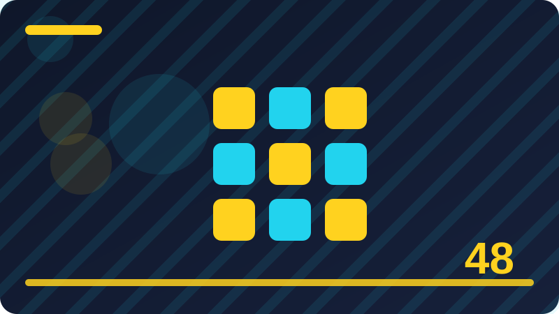

Chapter 48: Building a Real Site: Planning and Structure

Section 1: Meet CssDay: The Portfolio You Will Style
Think of meet cssday: the portfolio you will style as a practical habit rather than a single trick: it is something you will return to on almost every real project, and it gets faster and calmer with practice. Before you change any code for meet cssday: the portfolio you will style, take a moment to describe what you expected to see, what you actually see, and how the two differ, because that short comparison often points straight at the cause. The goal here is not to memorise every rule about meet cssday: the portfolio you will style, but to build a reliable way of thinking about it, so you can work out new cases for yourself instead of guessing.
Notice also that browsers are consistent helpers here: they do not hide their reasoning, and the tools they provide let you see the winning rule, the losing rules, and the final computed value side by side. In practical terms, meet cssday: the portfolio you will style works by connecting a few ideas you have already met: the browser reads your stylesheet in order, resolves conflicts by the cascade and specificity, and then paints the result on the screen. That chain matters because a style can look correct in your file and still lose to another rule, be overridden by a later declaration, or be ignored when its selector does not match the element you meant.
Watch out for silent mistakes as well: a page can look finished while a rule is being ignored, a breakpoint never fires, a colour fails contrast, or a layout only works at one exact screen width. If you feel stuck, describe the problem out loud in plain words, as if you were explaining it to a friend, because the act of describing it often reveals an assumption you had not noticed you were making. It also helps to compare your code with a known-good example, line by line, rather than skimming both, since the difference is frequently a single missing brace, a mistyped property name, or a selector that is almost right.
Finally, judge your work by the result on the screen and by how easy it is to maintain, not by how clever the code looks, because clear, predictable CSS serves both you and anyone who reads it later. To make meet cssday: the portfolio you will style stick, connect it to work you have already done, especially to CssDay or to a small page of your own, and ask where this idea would help, where it would be unnecessary, and what would break if you left it out.
If the example surprises you, treat that surprise as useful information rather than a failure, write down the assumption it challenged, test the assumption again, and you will remember the lesson far longer. Once the small example makes sense, try applying the same idea to a slightly larger piece of your own site, and check the result at a phone width, a tablet width, and a desktop width before you call it done. That habit of testing at several widths, in more than one state, and after a fresh reload is what turns a lesson about meet cssday: the portfolio you will style into reliable skill you can trust on a real project.
:root {
--brand: #2563eb;
--space: 1rem;
}Check: In your own words, explain meet cssday: the portfolio you will style and give one example of where you would use it in a real CSS project.
Section 2: What CssDay Already Has from HtmlDay
The goal here is not to memorise every rule about what cssday already has from htmlday, but to build a reliable way of thinking about it, so you can work out new cases for yourself instead of guessing. A useful way into what cssday already has from htmlday is to start with the smallest possible example that still shows the behaviour, then change one thing, watch what happens, and write down what you learned. This section looks closely at what cssday already has from htmlday, a topic that rewards patience far more than speed, because the details that confuse beginners usually turn out to be small, visible and fixable once you know where to look.
That chain matters because a style can look correct in your file and still lose to another rule, be overridden by a later declaration, or be ignored when its selector does not match the element you meant. When you understand that chain, what cssday already has from htmlday stops feeling mysterious: you can follow a style from your file to the screen, check each link in the chain, and find the link that broke. A good experiment is to change one value deliberately, reload the page, and notice exactly which part of the layout moves, changes colour, or stays the same, since the part that stays still is often the clue.
It also helps to compare your code with a known-good example, line by line, rather than skimming both, since the difference is frequently a single missing brace, a mistyped property name, or a selector that is almost right. Remember that asking for help is part of the skill: a clear description, a small example, and the exact behaviour you expected will get you a useful answer far faster than a screenshot alone.
Try teaching it back to yourself in two or three sentences without looking at this page, because the parts you cannot explain yet are exactly the parts worth revisiting before you move on. A short, deliberate practice session beats a long, passive reread: build the example, break it on purpose, fix it again, and then change it into something slightly different that still works. As you practise, keep notes in your own words about what surprised you, since those surprises mark the places where your mental model was incomplete, and revisiting them later will strengthen it.
That habit of testing at several widths, in more than one state, and after a fresh reload is what turns a lesson about what cssday already has from htmlday into reliable skill you can trust on a real project. Keep this section nearby while you work on the practical task at the end of the chapter, because returning to a concrete example while you build is more useful than trying to hold everything in memory. The code example below shows what cssday already has from htmlday in miniature, so study it before you judge whether you understand the idea, and run it in your head or in a real file, changing one value at a time.
.container {
max-width: 70rem;
margin: 0 auto;
padding: 1rem;
}Check: In your own words, explain what cssday already has from htmlday and give one example of where you would use it in a real CSS project.
Section 3: Setting a Goal for the Finished Site
This section looks closely at setting a goal for the finished site, a topic that rewards patience far more than speed, because the details that confuse beginners usually turn out to be small, visible and fixable once you know where to look. Many learners meet setting a goal for the finished site while they are already frustrated by something else on the page, so it helps to slow down, name the problem in one plain sentence, and then check one suspect at a time.
A good experiment is to change one value deliberately, reload the page, and notice exactly which part of the layout moves, changes colour, or stays the same, since the part that stays still is often the clue. Keep your test small on purpose, because a tiny page with one heading, one paragraph and one box will teach you more about setting a goal for the finished site in ten minutes than a whole crowded site will in an hour. Notice also that browsers are consistent helpers here: they do not hide their reasoning, and the tools they provide let you see the winning rule, the losing rules, and the final computed value side by side.
Beginners most often struggle with setting a goal for the finished site not because the idea is hard, but because they try to fix three things at once, copy a large block of code they do not understand, or change values at random until something looks better. A steadier approach is to make one change, check the result, and either keep it or undo it, so you always know which change caused which effect and you never lose a version that was nearly right. Watch out for silent mistakes as well: a page can look finished while a rule is being ignored, a breakpoint never fires, a colour fails contrast, or a layout only works at one exact screen width.
As you practise, keep notes in your own words about what surprised you, since those surprises mark the places where your mental model was incomplete, and revisiting them later will strengthen it. Over time, setting a goal for the finished site will become one of those quiet skills you use without thinking, and that is the real sign of progress: not that you remember a definition, but that you reach for the right tool without hesitation. Finally, judge your work by the result on the screen and by how easy it is to maintain, not by how clever the code looks, because clear, predictable CSS serves both you and anyone who reads it later.
The code example below shows setting a goal for the finished site in miniature, so study it before you judge whether you understand the idea, and run it in your head or in a real file, changing one value at a time. Pay attention to the property names and values in the example, because CSS rewards precision: a small change in a value can shift a whole layout, and noticing that sensitivity is part of becoming fluent. If the example surprises you, treat that surprise as useful information rather than a failure, write down the assumption it challenged, test the assumption again, and you will remember the lesson far longer.
.site-header {
display: flex;
justify-content: space-between;
}Check: In your own words, explain setting a goal for the finished site and give one example of where you would use it in a real CSS project.
Section 4: Sketching CssDay on Paper First
Think of sketching cssday on paper first as a practical habit rather than a single trick: it is something you will return to on almost every real project, and it gets faster and calmer with practice. Before you change any code for sketching cssday on paper first, take a moment to describe what you expected to see, what you actually see, and how the two differ, because that short comparison often points straight at the cause. The goal here is not to memorise every rule about sketching cssday on paper first, but to build a reliable way of thinking about it, so you can work out new cases for yourself instead of guessing.
Notice also that browsers are consistent helpers here: they do not hide their reasoning, and the tools they provide let you see the winning rule, the losing rules, and the final computed value side by side. In practical terms, sketching cssday on paper first works by connecting a few ideas you have already met: the browser reads your stylesheet in order, resolves conflicts by the cascade and specificity, and then paints the result on the screen. That chain matters because a style can look correct in your file and still lose to another rule, be overridden by a later declaration, or be ignored when its selector does not match the element you meant.
Watch out for silent mistakes as well: a page can look finished while a rule is being ignored, a breakpoint never fires, a colour fails contrast, or a layout only works at one exact screen width. If you feel stuck, describe the problem out loud in plain words, as if you were explaining it to a friend, because the act of describing it often reveals an assumption you had not noticed you were making. It also helps to compare your code with a known-good example, line by line, rather than skimming both, since the difference is frequently a single missing brace, a mistyped property name, or a selector that is almost right.
Finally, judge your work by the result on the screen and by how easy it is to maintain, not by how clever the code looks, because clear, predictable CSS serves both you and anyone who reads it later. To make sketching cssday on paper first stick, connect it to work you have already done, especially to CssDay or to a small page of your own, and ask where this idea would help, where it would be unnecessary, and what would break if you left it out.
If the example surprises you, treat that surprise as useful information rather than a failure, write down the assumption it challenged, test the assumption again, and you will remember the lesson far longer. Once the small example makes sense, try applying the same idea to a slightly larger piece of your own site, and check the result at a phone width, a tablet width, and a desktop width before you call it done. That habit of testing at several widths, in more than one state, and after a fresh reload is what turns a lesson about sketching cssday on paper first into reliable skill you can trust on a real project.
.projects {
display: grid;
gap: 1.5rem;
}Check: In your own words, explain sketching cssday on paper first and give one example of where you would use it in a real CSS project.
Section 5: The Pages and Sections of CssDay
The goal here is not to memorise every rule about the pages and sections of cssday, but to build a reliable way of thinking about it, so you can work out new cases for yourself instead of guessing. A useful way into the pages and sections of cssday is to start with the smallest possible example that still shows the behaviour, then change one thing, watch what happens, and write down what you learned. This section looks closely at the pages and sections of cssday, a topic that rewards patience far more than speed, because the details that confuse beginners usually turn out to be small, visible and fixable once you know where to look.
That chain matters because a style can look correct in your file and still lose to another rule, be overridden by a later declaration, or be ignored when its selector does not match the element you meant. When you understand that chain, the pages and sections of cssday stops feeling mysterious: you can follow a style from your file to the screen, check each link in the chain, and find the link that broke. A good experiment is to change one value deliberately, reload the page, and notice exactly which part of the layout moves, changes colour, or stays the same, since the part that stays still is often the clue.
It also helps to compare your code with a known-good example, line by line, rather than skimming both, since the difference is frequently a single missing brace, a mistyped property name, or a selector that is almost right. Remember that asking for help is part of the skill: a clear description, a small example, and the exact behaviour you expected will get you a useful answer far faster than a screenshot alone.
Try teaching it back to yourself in two or three sentences without looking at this page, because the parts you cannot explain yet are exactly the parts worth revisiting before you move on. A short, deliberate practice session beats a long, passive reread: build the example, break it on purpose, fix it again, and then change it into something slightly different that still works. As you practise, keep notes in your own words about what surprised you, since those surprises mark the places where your mental model was incomplete, and revisiting them later will strengthen it.
That habit of testing at several widths, in more than one state, and after a fresh reload is what turns a lesson about the pages and sections of cssday into reliable skill you can trust on a real project. Keep this section nearby while you work on the practical task at the end of the chapter, because returning to a concrete example while you build is more useful than trying to hold everything in memory. The code example below shows the pages and sections of cssday in miniature, so study it before you judge whether you understand the idea, and run it in your head or in a real file, changing one value at a time.
:root {
--brand: #2563eb;
--space: 1rem;
}Check: In your own words, explain the pages and sections of cssday and give one example of where you would use it in a real CSS project.
Section 6: Naming Your Files and Folders
This section looks closely at naming your files and folders, a topic that rewards patience far more than speed, because the details that confuse beginners usually turn out to be small, visible and fixable once you know where to look. Many learners meet naming your files and folders while they are already frustrated by something else on the page, so it helps to slow down, name the problem in one plain sentence, and then check one suspect at a time. Think of naming your files and folders as a practical habit rather than a single trick: it is something you will return to on almost every real project, and it gets faster and calmer with practice.
A good experiment is to change one value deliberately, reload the page, and notice exactly which part of the layout moves, changes colour, or stays the same, since the part that stays still is often the clue. Keep your test small on purpose, because a tiny page with one heading, one paragraph and one box will teach you more about naming your files and folders in ten minutes than a whole crowded site will in an hour. Notice also that browsers are consistent helpers here: they do not hide their reasoning, and the tools they provide let you see the winning rule, the losing rules, and the final computed value side by side.
Beginners most often struggle with naming your files and folders not because the idea is hard, but because they try to fix three things at once, copy a large block of code they do not understand, or change values at random until something looks better. A steadier approach is to make one change, check the result, and either keep it or undo it, so you always know which change caused which effect and you never lose a version that was nearly right.
As you practise, keep notes in your own words about what surprised you, since those surprises mark the places where your mental model was incomplete, and revisiting them later will strengthen it. Over time, naming your files and folders will become one of those quiet skills you use without thinking, and that is the real sign of progress: not that you remember a definition, but that you reach for the right tool without hesitation. Finally, judge your work by the result on the screen and by how easy it is to maintain, not by how clever the code looks, because clear, predictable CSS serves both you and anyone who reads it later.
The code example below shows naming your files and folders in miniature, so study it before you judge whether you understand the idea, and run it in your head or in a real file, changing one value at a time. Pay attention to the property names and values in the example, because CSS rewards precision: a small change in a value can shift a whole layout, and noticing that sensitivity is part of becoming fluent. If the example surprises you, treat that surprise as useful information rather than a failure, write down the assumption it challenged, test the assumption again, and you will remember the lesson far longer.
.container {
max-width: 70rem;
margin: 0 auto;
padding: 1rem;
}Check: In your own words, explain naming your files and folders and give one example of where you would use it in a real CSS project.
Section 7: Planning the Stylesheet Structure
Think of planning the stylesheet structure as a practical habit rather than a single trick: it is something you will return to on almost every real project, and it gets faster and calmer with practice. Before you change any code for planning the stylesheet structure, take a moment to describe what you expected to see, what you actually see, and how the two differ, because that short comparison often points straight at the cause. The goal here is not to memorise every rule about planning the stylesheet structure, but to build a reliable way of thinking about it, so you can work out new cases for yourself instead of guessing.
Notice also that browsers are consistent helpers here: they do not hide their reasoning, and the tools they provide let you see the winning rule, the losing rules, and the final computed value side by side. In practical terms, planning the stylesheet structure works by connecting a few ideas you have already met: the browser reads your stylesheet in order, resolves conflicts by the cascade and specificity, and then paints the result on the screen. That chain matters because a style can look correct in your file and still lose to another rule, be overridden by a later declaration, or be ignored when its selector does not match the element you meant.
Watch out for silent mistakes as well: a page can look finished while a rule is being ignored, a breakpoint never fires, a colour fails contrast, or a layout only works at one exact screen width. If you feel stuck, describe the problem out loud in plain words, as if you were explaining it to a friend, because the act of describing it often reveals an assumption you had not noticed you were making. It also helps to compare your code with a known-good example, line by line, rather than skimming both, since the difference is frequently a single missing brace, a mistyped property name, or a selector that is almost right.
Finally, judge your work by the result on the screen and by how easy it is to maintain, not by how clever the code looks, because clear, predictable CSS serves both you and anyone who reads it later. To make planning the stylesheet structure stick, connect it to work you have already done, especially to CssDay or to a small page of your own, and ask where this idea would help, where it would be unnecessary, and what would break if you left it out.
If the example surprises you, treat that surprise as useful information rather than a failure, write down the assumption it challenged, test the assumption again, and you will remember the lesson far longer. Once the small example makes sense, try applying the same idea to a slightly larger piece of your own site, and check the result at a phone width, a tablet width, and a desktop width before you call it done. That habit of testing at several widths, in more than one state, and after a fresh reload is what turns a lesson about planning the stylesheet structure into reliable skill you can trust on a real project.
.site-header {
display: flex;
justify-content: space-between;
}Check: In your own words, explain planning the stylesheet structure and give one example of where you would use it in a real CSS project.
Section 8: Choosing a Colour System for CssDay
The goal here is not to memorise every rule about choosing a colour system for cssday, but to build a reliable way of thinking about it, so you can work out new cases for yourself instead of guessing. A useful way into choosing a colour system for cssday is to start with the smallest possible example that still shows the behaviour, then change one thing, watch what happens, and write down what you learned. This section looks closely at choosing a colour system for cssday, a topic that rewards patience far more than speed, because the details that confuse beginners usually turn out to be small, visible and fixable once you know where to look.
That chain matters because a style can look correct in your file and still lose to another rule, be overridden by a later declaration, or be ignored when its selector does not match the element you meant. When you understand that chain, choosing a colour system for cssday stops feeling mysterious: you can follow a style from your file to the screen, check each link in the chain, and find the link that broke. A good experiment is to change one value deliberately, reload the page, and notice exactly which part of the layout moves, changes colour, or stays the same, since the part that stays still is often the clue.
It also helps to compare your code with a known-good example, line by line, rather than skimming both, since the difference is frequently a single missing brace, a mistyped property name, or a selector that is almost right. Remember that asking for help is part of the skill: a clear description, a small example, and the exact behaviour you expected will get you a useful answer far faster than a screenshot alone.
Try teaching it back to yourself in two or three sentences without looking at this page, because the parts you cannot explain yet are exactly the parts worth revisiting before you move on. A short, deliberate practice session beats a long, passive reread: build the example, break it on purpose, fix it again, and then change it into something slightly different that still works. As you practise, keep notes in your own words about what surprised you, since those surprises mark the places where your mental model was incomplete, and revisiting them later will strengthen it.
That habit of testing at several widths, in more than one state, and after a fresh reload is what turns a lesson about choosing a colour system for cssday into reliable skill you can trust on a real project. Keep this section nearby while you work on the practical task at the end of the chapter, because returning to a concrete example while you build is more useful than trying to hold everything in memory. The code example below shows choosing a colour system for cssday in miniature, so study it before you judge whether you understand the idea, and run it in your head or in a real file, changing one value at a time.
.projects {
display: grid;
gap: 1.5rem;
}Check: In your own words, explain choosing a colour system for cssday and give one example of where you would use it in a real CSS project.
Section 9: Choosing Typefaces and a Type Scale
This section looks closely at choosing typefaces and a type scale, a topic that rewards patience far more than speed, because the details that confuse beginners usually turn out to be small, visible and fixable once you know where to look. Many learners meet choosing typefaces and a type scale while they are already frustrated by something else on the page, so it helps to slow down, name the problem in one plain sentence, and then check one suspect at a time.
A good experiment is to change one value deliberately, reload the page, and notice exactly which part of the layout moves, changes colour, or stays the same, since the part that stays still is often the clue. Keep your test small on purpose, because a tiny page with one heading, one paragraph and one box will teach you more about choosing typefaces and a type scale in ten minutes than a whole crowded site will in an hour. Notice also that browsers are consistent helpers here: they do not hide their reasoning, and the tools they provide let you see the winning rule, the losing rules, and the final computed value side by side.
Beginners most often struggle with choosing typefaces and a type scale not because the idea is hard, but because they try to fix three things at once, copy a large block of code they do not understand, or change values at random until something looks better. A steadier approach is to make one change, check the result, and either keep it or undo it, so you always know which change caused which effect and you never lose a version that was nearly right. Watch out for silent mistakes as well: a page can look finished while a rule is being ignored, a breakpoint never fires, a colour fails contrast, or a layout only works at one exact screen width.
As you practise, keep notes in your own words about what surprised you, since those surprises mark the places where your mental model was incomplete, and revisiting them later will strengthen it. Over time, choosing typefaces and a type scale will become one of those quiet skills you use without thinking, and that is the real sign of progress: not that you remember a definition, but that you reach for the right tool without hesitation. Finally, judge your work by the result on the screen and by how easy it is to maintain, not by how clever the code looks, because clear, predictable CSS serves both you and anyone who reads it later.
The code example below shows choosing typefaces and a type scale in miniature, so study it before you judge whether you understand the idea, and run it in your head or in a real file, changing one value at a time. Pay attention to the property names and values in the example, because CSS rewards precision: a small change in a value can shift a whole layout, and noticing that sensitivity is part of becoming fluent. If the example surprises you, treat that surprise as useful information rather than a failure, write down the assumption it challenged, test the assumption again, and you will remember the lesson far longer.
:root {
--brand: #2563eb;
--space: 1rem;
}Check: In your own words, explain choosing typefaces and a type scale and give one example of where you would use it in a real CSS project.
Section 10: Planning Spacing and Rhythm
Think of planning spacing and rhythm as a practical habit rather than a single trick: it is something you will return to on almost every real project, and it gets faster and calmer with practice. Before you change any code for planning spacing and rhythm, take a moment to describe what you expected to see, what you actually see, and how the two differ, because that short comparison often points straight at the cause. The goal here is not to memorise every rule about planning spacing and rhythm, but to build a reliable way of thinking about it, so you can work out new cases for yourself instead of guessing.
Notice also that browsers are consistent helpers here: they do not hide their reasoning, and the tools they provide let you see the winning rule, the losing rules, and the final computed value side by side. In practical terms, planning spacing and rhythm works by connecting a few ideas you have already met: the browser reads your stylesheet in order, resolves conflicts by the cascade and specificity, and then paints the result on the screen. That chain matters because a style can look correct in your file and still lose to another rule, be overridden by a later declaration, or be ignored when its selector does not match the element you meant.
Watch out for silent mistakes as well: a page can look finished while a rule is being ignored, a breakpoint never fires, a colour fails contrast, or a layout only works at one exact screen width. If you feel stuck, describe the problem out loud in plain words, as if you were explaining it to a friend, because the act of describing it often reveals an assumption you had not noticed you were making. It also helps to compare your code with a known-good example, line by line, rather than skimming both, since the difference is frequently a single missing brace, a mistyped property name, or a selector that is almost right.
Finally, judge your work by the result on the screen and by how easy it is to maintain, not by how clever the code looks, because clear, predictable CSS serves both you and anyone who reads it later. To make planning spacing and rhythm stick, connect it to work you have already done, especially to CssDay or to a small page of your own, and ask where this idea would help, where it would be unnecessary, and what would break if you left it out.
If the example surprises you, treat that surprise as useful information rather than a failure, write down the assumption it challenged, test the assumption again, and you will remember the lesson far longer. Once the small example makes sense, try applying the same idea to a slightly larger piece of your own site, and check the result at a phone width, a tablet width, and a desktop width before you call it done. That habit of testing at several widths, in more than one state, and after a fresh reload is what turns a lesson about planning spacing and rhythm into reliable skill you can trust on a real project.
.container {
max-width: 70rem;
margin: 0 auto;
padding: 1rem;
}Check: In your own words, explain planning spacing and rhythm and give one example of where you would use it in a real CSS project.
Section 11: The Header and Navigation Plan
The goal here is not to memorise every rule about the header and navigation plan, but to build a reliable way of thinking about it, so you can work out new cases for yourself instead of guessing. A useful way into the header and navigation plan is to start with the smallest possible example that still shows the behaviour, then change one thing, watch what happens, and write down what you learned. This section looks closely at the header and navigation plan, a topic that rewards patience far more than speed, because the details that confuse beginners usually turn out to be small, visible and fixable once you know where to look.
That chain matters because a style can look correct in your file and still lose to another rule, be overridden by a later declaration, or be ignored when its selector does not match the element you meant. When you understand that chain, the header and navigation plan stops feeling mysterious: you can follow a style from your file to the screen, check each link in the chain, and find the link that broke. A good experiment is to change one value deliberately, reload the page, and notice exactly which part of the layout moves, changes colour, or stays the same, since the part that stays still is often the clue.
It also helps to compare your code with a known-good example, line by line, rather than skimming both, since the difference is frequently a single missing brace, a mistyped property name, or a selector that is almost right. Remember that asking for help is part of the skill: a clear description, a small example, and the exact behaviour you expected will get you a useful answer far faster than a screenshot alone. Beginners most often struggle with the header and navigation plan not because the idea is hard, but because they try to fix three things at once, copy a large block of code they do not understand, or change values at random until something looks better.
Try teaching it back to yourself in two or three sentences without looking at this page, because the parts you cannot explain yet are exactly the parts worth revisiting before you move on. A short, deliberate practice session beats a long, passive reread: build the example, break it on purpose, fix it again, and then change it into something slightly different that still works. As you practise, keep notes in your own words about what surprised you, since those surprises mark the places where your mental model was incomplete, and revisiting them later will strengthen it.
That habit of testing at several widths, in more than one state, and after a fresh reload is what turns a lesson about the header and navigation plan into reliable skill you can trust on a real project. Keep this section nearby while you work on the practical task at the end of the chapter, because returning to a concrete example while you build is more useful than trying to hold everything in memory. The code example below shows the header and navigation plan in miniature, so study it before you judge whether you understand the idea, and run it in your head or in a real file, changing one value at a time.
.site-header {
display: flex;
justify-content: space-between;
}Check: In your own words, explain the header and navigation plan and give one example of where you would use it in a real CSS project.
Section 12: The Hero Section Plan
This section looks closely at the hero section plan, a topic that rewards patience far more than speed, because the details that confuse beginners usually turn out to be small, visible and fixable once you know where to look. Many learners meet the hero section plan while they are already frustrated by something else on the page, so it helps to slow down, name the problem in one plain sentence, and then check one suspect at a time. Think of the hero section plan as a practical habit rather than a single trick: it is something you will return to on almost every real project, and it gets faster and calmer with practice.
A good experiment is to change one value deliberately, reload the page, and notice exactly which part of the layout moves, changes colour, or stays the same, since the part that stays still is often the clue. Keep your test small on purpose, because a tiny page with one heading, one paragraph and one box will teach you more about the hero section plan in ten minutes than a whole crowded site will in an hour. Notice also that browsers are consistent helpers here: they do not hide their reasoning, and the tools they provide let you see the winning rule, the losing rules, and the final computed value side by side.
Beginners most often struggle with the hero section plan not because the idea is hard, but because they try to fix three things at once, copy a large block of code they do not understand, or change values at random until something looks better. A steadier approach is to make one change, check the result, and either keep it or undo it, so you always know which change caused which effect and you never lose a version that was nearly right.
As you practise, keep notes in your own words about what surprised you, since those surprises mark the places where your mental model was incomplete, and revisiting them later will strengthen it. Over time, the hero section plan will become one of those quiet skills you use without thinking, and that is the real sign of progress: not that you remember a definition, but that you reach for the right tool without hesitation. Finally, judge your work by the result on the screen and by how easy it is to maintain, not by how clever the code looks, because clear, predictable CSS serves both you and anyone who reads it later.
The code example below shows the hero section plan in miniature, so study it before you judge whether you understand the idea, and run it in your head or in a real file, changing one value at a time. Pay attention to the property names and values in the example, because CSS rewards precision: a small change in a value can shift a whole layout, and noticing that sensitivity is part of becoming fluent. If the example surprises you, treat that surprise as useful information rather than a failure, write down the assumption it challenged, test the assumption again, and you will remember the lesson far longer.
.projects {
display: grid;
gap: 1.5rem;
}Check: In your own words, explain the hero section plan and give one example of where you would use it in a real CSS project.
Section 13: The About Section Plan
Think of the about section plan as a practical habit rather than a single trick: it is something you will return to on almost every real project, and it gets faster and calmer with practice. Before you change any code for the about section plan, take a moment to describe what you expected to see, what you actually see, and how the two differ, because that short comparison often points straight at the cause. The goal here is not to memorise every rule about the about section plan, but to build a reliable way of thinking about it, so you can work out new cases for yourself instead of guessing.
Notice also that browsers are consistent helpers here: they do not hide their reasoning, and the tools they provide let you see the winning rule, the losing rules, and the final computed value side by side. In practical terms, the about section plan works by connecting a few ideas you have already met: the browser reads your stylesheet in order, resolves conflicts by the cascade and specificity, and then paints the result on the screen. That chain matters because a style can look correct in your file and still lose to another rule, be overridden by a later declaration, or be ignored when its selector does not match the element you meant.
Watch out for silent mistakes as well: a page can look finished while a rule is being ignored, a breakpoint never fires, a colour fails contrast, or a layout only works at one exact screen width. If you feel stuck, describe the problem out loud in plain words, as if you were explaining it to a friend, because the act of describing it often reveals an assumption you had not noticed you were making. It also helps to compare your code with a known-good example, line by line, rather than skimming both, since the difference is frequently a single missing brace, a mistyped property name, or a selector that is almost right.
Finally, judge your work by the result on the screen and by how easy it is to maintain, not by how clever the code looks, because clear, predictable CSS serves both you and anyone who reads it later. To make the about section plan stick, connect it to work you have already done, especially to CssDay or to a small page of your own, and ask where this idea would help, where it would be unnecessary, and what would break if you left it out.
If the example surprises you, treat that surprise as useful information rather than a failure, write down the assumption it challenged, test the assumption again, and you will remember the lesson far longer. Once the small example makes sense, try applying the same idea to a slightly larger piece of your own site, and check the result at a phone width, a tablet width, and a desktop width before you call it done. That habit of testing at several widths, in more than one state, and after a fresh reload is what turns a lesson about the about section plan into reliable skill you can trust on a real project.
:root {
--brand: #2563eb;
--space: 1rem;
}Check: In your own words, explain the about section plan and give one example of where you would use it in a real CSS project.
Section 14: The Projects Grid Plan
The goal here is not to memorise every rule about the projects grid plan, but to build a reliable way of thinking about it, so you can work out new cases for yourself instead of guessing. A useful way into the projects grid plan is to start with the smallest possible example that still shows the behaviour, then change one thing, watch what happens, and write down what you learned. This section looks closely at the projects grid plan, a topic that rewards patience far more than speed, because the details that confuse beginners usually turn out to be small, visible and fixable once you know where to look.
That chain matters because a style can look correct in your file and still lose to another rule, be overridden by a later declaration, or be ignored when its selector does not match the element you meant. When you understand that chain, the projects grid plan stops feeling mysterious: you can follow a style from your file to the screen, check each link in the chain, and find the link that broke. A good experiment is to change one value deliberately, reload the page, and notice exactly which part of the layout moves, changes colour, or stays the same, since the part that stays still is often the clue.
It also helps to compare your code with a known-good example, line by line, rather than skimming both, since the difference is frequently a single missing brace, a mistyped property name, or a selector that is almost right. Remember that asking for help is part of the skill: a clear description, a small example, and the exact behaviour you expected will get you a useful answer far faster than a screenshot alone. Beginners most often struggle with the projects grid plan not because the idea is hard, but because they try to fix three things at once, copy a large block of code they do not understand, or change values at random until something looks better.
Try teaching it back to yourself in two or three sentences without looking at this page, because the parts you cannot explain yet are exactly the parts worth revisiting before you move on. A short, deliberate practice session beats a long, passive reread: build the example, break it on purpose, fix it again, and then change it into something slightly different that still works. As you practise, keep notes in your own words about what surprised you, since those surprises mark the places where your mental model was incomplete, and revisiting them later will strengthen it.
That habit of testing at several widths, in more than one state, and after a fresh reload is what turns a lesson about the projects grid plan into reliable skill you can trust on a real project. Keep this section nearby while you work on the practical task at the end of the chapter, because returning to a concrete example while you build is more useful than trying to hold everything in memory. The code example below shows the projects grid plan in miniature, so study it before you judge whether you understand the idea, and run it in your head or in a real file, changing one value at a time.
.container {
max-width: 70rem;
margin: 0 auto;
padding: 1rem;
}Check: In your own words, explain the projects grid plan and give one example of where you would use it in a real CSS project.
Section 15: The Skills and Services Plan
This section looks closely at the skills and services plan, a topic that rewards patience far more than speed, because the details that confuse beginners usually turn out to be small, visible and fixable once you know where to look. Many learners meet the skills and services plan while they are already frustrated by something else on the page, so it helps to slow down, name the problem in one plain sentence, and then check one suspect at a time. Think of the skills and services plan as a practical habit rather than a single trick: it is something you will return to on almost every real project, and it gets faster and calmer with practice.
A good experiment is to change one value deliberately, reload the page, and notice exactly which part of the layout moves, changes colour, or stays the same, since the part that stays still is often the clue. Keep your test small on purpose, because a tiny page with one heading, one paragraph and one box will teach you more about the skills and services plan in ten minutes than a whole crowded site will in an hour. Notice also that browsers are consistent helpers here: they do not hide their reasoning, and the tools they provide let you see the winning rule, the losing rules, and the final computed value side by side.
Beginners most often struggle with the skills and services plan not because the idea is hard, but because they try to fix three things at once, copy a large block of code they do not understand, or change values at random until something looks better. A steadier approach is to make one change, check the result, and either keep it or undo it, so you always know which change caused which effect and you never lose a version that was nearly right.
As you practise, keep notes in your own words about what surprised you, since those surprises mark the places where your mental model was incomplete, and revisiting them later will strengthen it. Over time, the skills and services plan will become one of those quiet skills you use without thinking, and that is the real sign of progress: not that you remember a definition, but that you reach for the right tool without hesitation. Finally, judge your work by the result on the screen and by how easy it is to maintain, not by how clever the code looks, because clear, predictable CSS serves both you and anyone who reads it later.
The code example below shows the skills and services plan in miniature, so study it before you judge whether you understand the idea, and run it in your head or in a real file, changing one value at a time. Pay attention to the property names and values in the example, because CSS rewards precision: a small change in a value can shift a whole layout, and noticing that sensitivity is part of becoming fluent. If the example surprises you, treat that surprise as useful information rather than a failure, write down the assumption it challenged, test the assumption again, and you will remember the lesson far longer.
.site-header {
display: flex;
justify-content: space-between;
}Check: In your own words, explain the skills and services plan and give one example of where you would use it in a real CSS project.
Section 16: The Contact Section Plan
Think of the contact section plan as a practical habit rather than a single trick: it is something you will return to on almost every real project, and it gets faster and calmer with practice. Before you change any code for the contact section plan, take a moment to describe what you expected to see, what you actually see, and how the two differ, because that short comparison often points straight at the cause. The goal here is not to memorise every rule about the contact section plan, but to build a reliable way of thinking about it, so you can work out new cases for yourself instead of guessing.
Notice also that browsers are consistent helpers here: they do not hide their reasoning, and the tools they provide let you see the winning rule, the losing rules, and the final computed value side by side. In practical terms, the contact section plan works by connecting a few ideas you have already met: the browser reads your stylesheet in order, resolves conflicts by the cascade and specificity, and then paints the result on the screen. That chain matters because a style can look correct in your file and still lose to another rule, be overridden by a later declaration, or be ignored when its selector does not match the element you meant.
Watch out for silent mistakes as well: a page can look finished while a rule is being ignored, a breakpoint never fires, a colour fails contrast, or a layout only works at one exact screen width. If you feel stuck, describe the problem out loud in plain words, as if you were explaining it to a friend, because the act of describing it often reveals an assumption you had not noticed you were making. It also helps to compare your code with a known-good example, line by line, rather than skimming both, since the difference is frequently a single missing brace, a mistyped property name, or a selector that is almost right.
Finally, judge your work by the result on the screen and by how easy it is to maintain, not by how clever the code looks, because clear, predictable CSS serves both you and anyone who reads it later. To make the contact section plan stick, connect it to work you have already done, especially to CssDay or to a small page of your own, and ask where this idea would help, where it would be unnecessary, and what would break if you left it out.
If the example surprises you, treat that surprise as useful information rather than a failure, write down the assumption it challenged, test the assumption again, and you will remember the lesson far longer. Once the small example makes sense, try applying the same idea to a slightly larger piece of your own site, and check the result at a phone width, a tablet width, and a desktop width before you call it done. That habit of testing at several widths, in more than one state, and after a fresh reload is what turns a lesson about the contact section plan into reliable skill you can trust on a real project.
.projects {
display: grid;
gap: 1.5rem;
}Check: In your own words, explain the contact section plan and give one example of where you would use it in a real CSS project.
Section 17: The Footer Plan
The goal here is not to memorise every rule about the footer plan, but to build a reliable way of thinking about it, so you can work out new cases for yourself instead of guessing. A useful way into the footer plan is to start with the smallest possible example that still shows the behaviour, then change one thing, watch what happens, and write down what you learned. This section looks closely at the footer plan, a topic that rewards patience far more than speed, because the details that confuse beginners usually turn out to be small, visible and fixable once you know where to look.
That chain matters because a style can look correct in your file and still lose to another rule, be overridden by a later declaration, or be ignored when its selector does not match the element you meant. When you understand that chain, the footer plan stops feeling mysterious: you can follow a style from your file to the screen, check each link in the chain, and find the link that broke. A good experiment is to change one value deliberately, reload the page, and notice exactly which part of the layout moves, changes colour, or stays the same, since the part that stays still is often the clue.
It also helps to compare your code with a known-good example, line by line, rather than skimming both, since the difference is frequently a single missing brace, a mistyped property name, or a selector that is almost right. Remember that asking for help is part of the skill: a clear description, a small example, and the exact behaviour you expected will get you a useful answer far faster than a screenshot alone. Beginners most often struggle with the footer plan not because the idea is hard, but because they try to fix three things at once, copy a large block of code they do not understand, or change values at random until something looks better.
Try teaching it back to yourself in two or three sentences without looking at this page, because the parts you cannot explain yet are exactly the parts worth revisiting before you move on. A short, deliberate practice session beats a long, passive reread: build the example, break it on purpose, fix it again, and then change it into something slightly different that still works. As you practise, keep notes in your own words about what surprised you, since those surprises mark the places where your mental model was incomplete, and revisiting them later will strengthen it.
That habit of testing at several widths, in more than one state, and after a fresh reload is what turns a lesson about the footer plan into reliable skill you can trust on a real project. Keep this section nearby while you work on the practical task at the end of the chapter, because returning to a concrete example while you build is more useful than trying to hold everything in memory. The code example below shows the footer plan in miniature, so study it before you judge whether you understand the idea, and run it in your head or in a real file, changing one value at a time.
:root {
--brand: #2563eb;
--space: 1rem;
}Check: In your own words, explain the footer plan and give one example of where you would use it in a real CSS project.
Section 18: Mobile-First Plan for CssDay
This section looks closely at mobile-first plan for cssday, a topic that rewards patience far more than speed, because the details that confuse beginners usually turn out to be small, visible and fixable once you know where to look. Many learners meet mobile-first plan for cssday while they are already frustrated by something else on the page, so it helps to slow down, name the problem in one plain sentence, and then check one suspect at a time. Think of mobile-first plan for cssday as a practical habit rather than a single trick: it is something you will return to on almost every real project, and it gets faster and calmer with practice.
A good experiment is to change one value deliberately, reload the page, and notice exactly which part of the layout moves, changes colour, or stays the same, since the part that stays still is often the clue. Keep your test small on purpose, because a tiny page with one heading, one paragraph and one box will teach you more about mobile-first plan for cssday in ten minutes than a whole crowded site will in an hour. Notice also that browsers are consistent helpers here: they do not hide their reasoning, and the tools they provide let you see the winning rule, the losing rules, and the final computed value side by side.
Beginners most often struggle with mobile-first plan for cssday not because the idea is hard, but because they try to fix three things at once, copy a large block of code they do not understand, or change values at random until something looks better. A steadier approach is to make one change, check the result, and either keep it or undo it, so you always know which change caused which effect and you never lose a version that was nearly right.
As you practise, keep notes in your own words about what surprised you, since those surprises mark the places where your mental model was incomplete, and revisiting them later will strengthen it. Over time, mobile-first plan for cssday will become one of those quiet skills you use without thinking, and that is the real sign of progress: not that you remember a definition, but that you reach for the right tool without hesitation. Finally, judge your work by the result on the screen and by how easy it is to maintain, not by how clever the code looks, because clear, predictable CSS serves both you and anyone who reads it later.
The code example below shows mobile-first plan for cssday in miniature, so study it before you judge whether you understand the idea, and run it in your head or in a real file, changing one value at a time. Pay attention to the property names and values in the example, because CSS rewards precision: a small change in a value can shift a whole layout, and noticing that sensitivity is part of becoming fluent. If the example surprises you, treat that surprise as useful information rather than a failure, write down the assumption it challenged, test the assumption again, and you will remember the lesson far longer.
.container {
max-width: 70rem;
margin: 0 auto;
padding: 1rem;
}Check: In your own words, explain mobile-first plan for cssday and give one example of where you would use it in a real CSS project.
Section 19: Breakpoints for CssDay
Think of breakpoints for cssday as a practical habit rather than a single trick: it is something you will return to on almost every real project, and it gets faster and calmer with practice. Before you change any code for breakpoints for cssday, take a moment to describe what you expected to see, what you actually see, and how the two differ, because that short comparison often points straight at the cause. The goal here is not to memorise every rule about breakpoints for cssday, but to build a reliable way of thinking about it, so you can work out new cases for yourself instead of guessing.
Notice also that browsers are consistent helpers here: they do not hide their reasoning, and the tools they provide let you see the winning rule, the losing rules, and the final computed value side by side. In practical terms, breakpoints for cssday works by connecting a few ideas you have already met: the browser reads your stylesheet in order, resolves conflicts by the cascade and specificity, and then paints the result on the screen. That chain matters because a style can look correct in your file and still lose to another rule, be overridden by a later declaration, or be ignored when its selector does not match the element you meant.
Watch out for silent mistakes as well: a page can look finished while a rule is being ignored, a breakpoint never fires, a colour fails contrast, or a layout only works at one exact screen width. If you feel stuck, describe the problem out loud in plain words, as if you were explaining it to a friend, because the act of describing it often reveals an assumption you had not noticed you were making. It also helps to compare your code with a known-good example, line by line, rather than skimming both, since the difference is frequently a single missing brace, a mistyped property name, or a selector that is almost right.
Finally, judge your work by the result on the screen and by how easy it is to maintain, not by how clever the code looks, because clear, predictable CSS serves both you and anyone who reads it later. To make breakpoints for cssday stick, connect it to work you have already done, especially to CssDay or to a small page of your own, and ask where this idea would help, where it would be unnecessary, and what would break if you left it out.
If the example surprises you, treat that surprise as useful information rather than a failure, write down the assumption it challenged, test the assumption again, and you will remember the lesson far longer. Once the small example makes sense, try applying the same idea to a slightly larger piece of your own site, and check the result at a phone width, a tablet width, and a desktop width before you call it done. That habit of testing at several widths, in more than one state, and after a fresh reload is what turns a lesson about breakpoints for cssday into reliable skill you can trust on a real project.
.site-header {
display: flex;
justify-content: space-between;
}Check: In your own words, explain breakpoints for cssday and give one example of where you would use it in a real CSS project.
Section 20: The Layout System: Grid and Flex Together
The goal here is not to memorise every rule about the layout system: grid and flex together, but to build a reliable way of thinking about it, so you can work out new cases for yourself instead of guessing. A useful way into the layout system: grid and flex together is to start with the smallest possible example that still shows the behaviour, then change one thing, watch what happens, and write down what you learned. This section looks closely at the layout system: grid and flex together, a topic that rewards patience far more than speed, because the details that confuse beginners usually turn out to be small, visible and fixable once you know where to look.
That chain matters because a style can look correct in your file and still lose to another rule, be overridden by a later declaration, or be ignored when its selector does not match the element you meant. When you understand that chain, the layout system: grid and flex together stops feeling mysterious: you can follow a style from your file to the screen, check each link in the chain, and find the link that broke. A good experiment is to change one value deliberately, reload the page, and notice exactly which part of the layout moves, changes colour, or stays the same, since the part that stays still is often the clue.
It also helps to compare your code with a known-good example, line by line, rather than skimming both, since the difference is frequently a single missing brace, a mistyped property name, or a selector that is almost right. Remember that asking for help is part of the skill: a clear description, a small example, and the exact behaviour you expected will get you a useful answer far faster than a screenshot alone.
Try teaching it back to yourself in two or three sentences without looking at this page, because the parts you cannot explain yet are exactly the parts worth revisiting before you move on. A short, deliberate practice session beats a long, passive reread: build the example, break it on purpose, fix it again, and then change it into something slightly different that still works. As you practise, keep notes in your own words about what surprised you, since those surprises mark the places where your mental model was incomplete, and revisiting them later will strengthen it.
That habit of testing at several widths, in more than one state, and after a fresh reload is what turns a lesson about the layout system: grid and flex together into reliable skill you can trust on a real project. Keep this section nearby while you work on the practical task at the end of the chapter, because returning to a concrete example while you build is more useful than trying to hold everything in memory. The code example below shows the layout system: grid and flex together in miniature, so study it before you judge whether you understand the idea, and run it in your head or in a real file, changing one value at a time.
.projects {
display: grid;
gap: 1.5rem;
}Check: In your own words, explain the layout system: grid and flex together and give one example of where you would use it in a real CSS project.
Section 21: Component List for CssDay
This section looks closely at component list for cssday, a topic that rewards patience far more than speed, because the details that confuse beginners usually turn out to be small, visible and fixable once you know where to look. Many learners meet component list for cssday while they are already frustrated by something else on the page, so it helps to slow down, name the problem in one plain sentence, and then check one suspect at a time. Think of component list for cssday as a practical habit rather than a single trick: it is something you will return to on almost every real project, and it gets faster and calmer with practice.
A good experiment is to change one value deliberately, reload the page, and notice exactly which part of the layout moves, changes colour, or stays the same, since the part that stays still is often the clue. Keep your test small on purpose, because a tiny page with one heading, one paragraph and one box will teach you more about component list for cssday in ten minutes than a whole crowded site will in an hour. Notice also that browsers are consistent helpers here: they do not hide their reasoning, and the tools they provide let you see the winning rule, the losing rules, and the final computed value side by side.
Beginners most often struggle with component list for cssday not because the idea is hard, but because they try to fix three things at once, copy a large block of code they do not understand, or change values at random until something looks better. A steadier approach is to make one change, check the result, and either keep it or undo it, so you always know which change caused which effect and you never lose a version that was nearly right.
As you practise, keep notes in your own words about what surprised you, since those surprises mark the places where your mental model was incomplete, and revisiting them later will strengthen it. Over time, component list for cssday will become one of those quiet skills you use without thinking, and that is the real sign of progress: not that you remember a definition, but that you reach for the right tool without hesitation. Finally, judge your work by the result on the screen and by how easy it is to maintain, not by how clever the code looks, because clear, predictable CSS serves both you and anyone who reads it later.
The code example below shows component list for cssday in miniature, so study it before you judge whether you understand the idea, and run it in your head or in a real file, changing one value at a time. Pay attention to the property names and values in the example, because CSS rewards precision: a small change in a value can shift a whole layout, and noticing that sensitivity is part of becoming fluent. If the example surprises you, treat that surprise as useful information rather than a failure, write down the assumption it challenged, test the assumption again, and you will remember the lesson far longer.
:root {
--brand: #2563eb;
--space: 1rem;
}Check: In your own words, explain component list for cssday and give one example of where you would use it in a real CSS project.
Section 22: Buttons, Links and Interactive States
Think of buttons, links and interactive states as a practical habit rather than a single trick: it is something you will return to on almost every real project, and it gets faster and calmer with practice. Before you change any code for buttons, links and interactive states, take a moment to describe what you expected to see, what you actually see, and how the two differ, because that short comparison often points straight at the cause. The goal here is not to memorise every rule about buttons, links and interactive states, but to build a reliable way of thinking about it, so you can work out new cases for yourself instead of guessing.
Notice also that browsers are consistent helpers here: they do not hide their reasoning, and the tools they provide let you see the winning rule, the losing rules, and the final computed value side by side. In practical terms, buttons, links and interactive states works by connecting a few ideas you have already met: the browser reads your stylesheet in order, resolves conflicts by the cascade and specificity, and then paints the result on the screen. That chain matters because a style can look correct in your file and still lose to another rule, be overridden by a later declaration, or be ignored when its selector does not match the element you meant.
Watch out for silent mistakes as well: a page can look finished while a rule is being ignored, a breakpoint never fires, a colour fails contrast, or a layout only works at one exact screen width. If you feel stuck, describe the problem out loud in plain words, as if you were explaining it to a friend, because the act of describing it often reveals an assumption you had not noticed you were making. It also helps to compare your code with a known-good example, line by line, rather than skimming both, since the difference is frequently a single missing brace, a mistyped property name, or a selector that is almost right.
Finally, judge your work by the result on the screen and by how easy it is to maintain, not by how clever the code looks, because clear, predictable CSS serves both you and anyone who reads it later. To make buttons, links and interactive states stick, connect it to work you have already done, especially to CssDay or to a small page of your own, and ask where this idea would help, where it would be unnecessary, and what would break if you left it out.
If the example surprises you, treat that surprise as useful information rather than a failure, write down the assumption it challenged, test the assumption again, and you will remember the lesson far longer. Once the small example makes sense, try applying the same idea to a slightly larger piece of your own site, and check the result at a phone width, a tablet width, and a desktop width before you call it done. That habit of testing at several widths, in more than one state, and after a fresh reload is what turns a lesson about buttons, links and interactive states into reliable skill you can trust on a real project.
.container {
max-width: 70rem;
margin: 0 auto;
padding: 1rem;
}Check: In your own words, explain buttons, links and interactive states and give one example of where you would use it in a real CSS project.
Section 23: Cards for Projects and Testimonials
The goal here is not to memorise every rule about cards for projects and testimonials, but to build a reliable way of thinking about it, so you can work out new cases for yourself instead of guessing. A useful way into cards for projects and testimonials is to start with the smallest possible example that still shows the behaviour, then change one thing, watch what happens, and write down what you learned. This section looks closely at cards for projects and testimonials, a topic that rewards patience far more than speed, because the details that confuse beginners usually turn out to be small, visible and fixable once you know where to look.
That chain matters because a style can look correct in your file and still lose to another rule, be overridden by a later declaration, or be ignored when its selector does not match the element you meant. When you understand that chain, cards for projects and testimonials stops feeling mysterious: you can follow a style from your file to the screen, check each link in the chain, and find the link that broke. A good experiment is to change one value deliberately, reload the page, and notice exactly which part of the layout moves, changes colour, or stays the same, since the part that stays still is often the clue.
It also helps to compare your code with a known-good example, line by line, rather than skimming both, since the difference is frequently a single missing brace, a mistyped property name, or a selector that is almost right. Remember that asking for help is part of the skill: a clear description, a small example, and the exact behaviour you expected will get you a useful answer far faster than a screenshot alone. Beginners most often struggle with cards for projects and testimonials not because the idea is hard, but because they try to fix three things at once, copy a large block of code they do not understand, or change values at random until something looks better.
Try teaching it back to yourself in two or three sentences without looking at this page, because the parts you cannot explain yet are exactly the parts worth revisiting before you move on. A short, deliberate practice session beats a long, passive reread: build the example, break it on purpose, fix it again, and then change it into something slightly different that still works. As you practise, keep notes in your own words about what surprised you, since those surprises mark the places where your mental model was incomplete, and revisiting them later will strengthen it.
That habit of testing at several widths, in more than one state, and after a fresh reload is what turns a lesson about cards for projects and testimonials into reliable skill you can trust on a real project. Keep this section nearby while you work on the practical task at the end of the chapter, because returning to a concrete example while you build is more useful than trying to hold everything in memory. The code example below shows cards for projects and testimonials in miniature, so study it before you judge whether you understand the idea, and run it in your head or in a real file, changing one value at a time.
.site-header {
display: flex;
justify-content: space-between;
}Check: In your own words, explain cards for projects and testimonials and give one example of where you would use it in a real CSS project.
Section 24: Forms: The Contact Form Plan
This section looks closely at forms: the contact form plan, a topic that rewards patience far more than speed, because the details that confuse beginners usually turn out to be small, visible and fixable once you know where to look. Many learners meet forms: the contact form plan while they are already frustrated by something else on the page, so it helps to slow down, name the problem in one plain sentence, and then check one suspect at a time. Think of forms: the contact form plan as a practical habit rather than a single trick: it is something you will return to on almost every real project, and it gets faster and calmer with practice.
A good experiment is to change one value deliberately, reload the page, and notice exactly which part of the layout moves, changes colour, or stays the same, since the part that stays still is often the clue. Keep your test small on purpose, because a tiny page with one heading, one paragraph and one box will teach you more about forms: the contact form plan in ten minutes than a whole crowded site will in an hour. Notice also that browsers are consistent helpers here: they do not hide their reasoning, and the tools they provide let you see the winning rule, the losing rules, and the final computed value side by side.
Beginners most often struggle with forms: the contact form plan not because the idea is hard, but because they try to fix three things at once, copy a large block of code they do not understand, or change values at random until something looks better. A steadier approach is to make one change, check the result, and either keep it or undo it, so you always know which change caused which effect and you never lose a version that was nearly right.
As you practise, keep notes in your own words about what surprised you, since those surprises mark the places where your mental model was incomplete, and revisiting them later will strengthen it. Over time, forms: the contact form plan will become one of those quiet skills you use without thinking, and that is the real sign of progress: not that you remember a definition, but that you reach for the right tool without hesitation. Finally, judge your work by the result on the screen and by how easy it is to maintain, not by how clever the code looks, because clear, predictable CSS serves both you and anyone who reads it later.
The code example below shows forms: the contact form plan in miniature, so study it before you judge whether you understand the idea, and run it in your head or in a real file, changing one value at a time. Pay attention to the property names and values in the example, because CSS rewards precision: a small change in a value can shift a whole layout, and noticing that sensitivity is part of becoming fluent. If the example surprises you, treat that surprise as useful information rather than a failure, write down the assumption it challenged, test the assumption again, and you will remember the lesson far longer.
.projects {
display: grid;
gap: 1.5rem;
}Check: In your own words, explain forms: the contact form plan and give one example of where you would use it in a real CSS project.
Section 25: Images and Media in CssDay
Think of images and media in cssday as a practical habit rather than a single trick: it is something you will return to on almost every real project, and it gets faster and calmer with practice. Before you change any code for images and media in cssday, take a moment to describe what you expected to see, what you actually see, and how the two differ, because that short comparison often points straight at the cause. The goal here is not to memorise every rule about images and media in cssday, but to build a reliable way of thinking about it, so you can work out new cases for yourself instead of guessing.
Notice also that browsers are consistent helpers here: they do not hide their reasoning, and the tools they provide let you see the winning rule, the losing rules, and the final computed value side by side. In practical terms, images and media in cssday works by connecting a few ideas you have already met: the browser reads your stylesheet in order, resolves conflicts by the cascade and specificity, and then paints the result on the screen. That chain matters because a style can look correct in your file and still lose to another rule, be overridden by a later declaration, or be ignored when its selector does not match the element you meant.
Watch out for silent mistakes as well: a page can look finished while a rule is being ignored, a breakpoint never fires, a colour fails contrast, or a layout only works at one exact screen width. If you feel stuck, describe the problem out loud in plain words, as if you were explaining it to a friend, because the act of describing it often reveals an assumption you had not noticed you were making. It also helps to compare your code with a known-good example, line by line, rather than skimming both, since the difference is frequently a single missing brace, a mistyped property name, or a selector that is almost right.
Finally, judge your work by the result on the screen and by how easy it is to maintain, not by how clever the code looks, because clear, predictable CSS serves both you and anyone who reads it later. To make images and media in cssday stick, connect it to work you have already done, especially to CssDay or to a small page of your own, and ask where this idea would help, where it would be unnecessary, and what would break if you left it out.
If the example surprises you, treat that surprise as useful information rather than a failure, write down the assumption it challenged, test the assumption again, and you will remember the lesson far longer. Once the small example makes sense, try applying the same idea to a slightly larger piece of your own site, and check the result at a phone width, a tablet width, and a desktop width before you call it done. That habit of testing at several widths, in more than one state, and after a fresh reload is what turns a lesson about images and media in cssday into reliable skill you can trust on a real project.
:root {
--brand: #2563eb;
--space: 1rem;
}Check: In your own words, explain images and media in cssday and give one example of where you would use it in a real CSS project.
Section 26: Dark Mode Plan for CssDay
The goal here is not to memorise every rule about dark mode plan for cssday, but to build a reliable way of thinking about it, so you can work out new cases for yourself instead of guessing. A useful way into dark mode plan for cssday is to start with the smallest possible example that still shows the behaviour, then change one thing, watch what happens, and write down what you learned. This section looks closely at dark mode plan for cssday, a topic that rewards patience far more than speed, because the details that confuse beginners usually turn out to be small, visible and fixable once you know where to look.
That chain matters because a style can look correct in your file and still lose to another rule, be overridden by a later declaration, or be ignored when its selector does not match the element you meant. When you understand that chain, dark mode plan for cssday stops feeling mysterious: you can follow a style from your file to the screen, check each link in the chain, and find the link that broke. A good experiment is to change one value deliberately, reload the page, and notice exactly which part of the layout moves, changes colour, or stays the same, since the part that stays still is often the clue.
It also helps to compare your code with a known-good example, line by line, rather than skimming both, since the difference is frequently a single missing brace, a mistyped property name, or a selector that is almost right. Remember that asking for help is part of the skill: a clear description, a small example, and the exact behaviour you expected will get you a useful answer far faster than a screenshot alone. Beginners most often struggle with dark mode plan for cssday not because the idea is hard, but because they try to fix three things at once, copy a large block of code they do not understand, or change values at random until something looks better.
Try teaching it back to yourself in two or three sentences without looking at this page, because the parts you cannot explain yet are exactly the parts worth revisiting before you move on. A short, deliberate practice session beats a long, passive reread: build the example, break it on purpose, fix it again, and then change it into something slightly different that still works. As you practise, keep notes in your own words about what surprised you, since those surprises mark the places where your mental model was incomplete, and revisiting them later will strengthen it.
That habit of testing at several widths, in more than one state, and after a fresh reload is what turns a lesson about dark mode plan for cssday into reliable skill you can trust on a real project. Keep this section nearby while you work on the practical task at the end of the chapter, because returning to a concrete example while you build is more useful than trying to hold everything in memory. The code example below shows dark mode plan for cssday in miniature, so study it before you judge whether you understand the idea, and run it in your head or in a real file, changing one value at a time.
.container {
max-width: 70rem;
margin: 0 auto;
padding: 1rem;
}Check: In your own words, explain dark mode plan for cssday and give one example of where you would use it in a real CSS project.
Section 27: Accessibility Plan for CssDay
This section looks closely at accessibility plan for cssday, a topic that rewards patience far more than speed, because the details that confuse beginners usually turn out to be small, visible and fixable once you know where to look. Many learners meet accessibility plan for cssday while they are already frustrated by something else on the page, so it helps to slow down, name the problem in one plain sentence, and then check one suspect at a time. Think of accessibility plan for cssday as a practical habit rather than a single trick: it is something you will return to on almost every real project, and it gets faster and calmer with practice.
A good experiment is to change one value deliberately, reload the page, and notice exactly which part of the layout moves, changes colour, or stays the same, since the part that stays still is often the clue. Keep your test small on purpose, because a tiny page with one heading, one paragraph and one box will teach you more about accessibility plan for cssday in ten minutes than a whole crowded site will in an hour. Notice also that browsers are consistent helpers here: they do not hide their reasoning, and the tools they provide let you see the winning rule, the losing rules, and the final computed value side by side.
Beginners most often struggle with accessibility plan for cssday not because the idea is hard, but because they try to fix three things at once, copy a large block of code they do not understand, or change values at random until something looks better. A steadier approach is to make one change, check the result, and either keep it or undo it, so you always know which change caused which effect and you never lose a version that was nearly right.
As you practise, keep notes in your own words about what surprised you, since those surprises mark the places where your mental model was incomplete, and revisiting them later will strengthen it. Over time, accessibility plan for cssday will become one of those quiet skills you use without thinking, and that is the real sign of progress: not that you remember a definition, but that you reach for the right tool without hesitation. Finally, judge your work by the result on the screen and by how easy it is to maintain, not by how clever the code looks, because clear, predictable CSS serves both you and anyone who reads it later.
The code example below shows accessibility plan for cssday in miniature, so study it before you judge whether you understand the idea, and run it in your head or in a real file, changing one value at a time. Pay attention to the property names and values in the example, because CSS rewards precision: a small change in a value can shift a whole layout, and noticing that sensitivity is part of becoming fluent. If the example surprises you, treat that surprise as useful information rather than a failure, write down the assumption it challenged, test the assumption again, and you will remember the lesson far longer.
.site-header {
display: flex;
justify-content: space-between;
}Check: In your own words, explain accessibility plan for cssday and give one example of where you would use it in a real CSS project.
Section 28: Print Plan for a Portfolio
Think of print plan for a portfolio as a practical habit rather than a single trick: it is something you will return to on almost every real project, and it gets faster and calmer with practice. Before you change any code for print plan for a portfolio, take a moment to describe what you expected to see, what you actually see, and how the two differ, because that short comparison often points straight at the cause. The goal here is not to memorise every rule about print plan for a portfolio, but to build a reliable way of thinking about it, so you can work out new cases for yourself instead of guessing.
Notice also that browsers are consistent helpers here: they do not hide their reasoning, and the tools they provide let you see the winning rule, the losing rules, and the final computed value side by side. In practical terms, print plan for a portfolio works by connecting a few ideas you have already met: the browser reads your stylesheet in order, resolves conflicts by the cascade and specificity, and then paints the result on the screen. That chain matters because a style can look correct in your file and still lose to another rule, be overridden by a later declaration, or be ignored when its selector does not match the element you meant.
Watch out for silent mistakes as well: a page can look finished while a rule is being ignored, a breakpoint never fires, a colour fails contrast, or a layout only works at one exact screen width. If you feel stuck, describe the problem out loud in plain words, as if you were explaining it to a friend, because the act of describing it often reveals an assumption you had not noticed you were making. It also helps to compare your code with a known-good example, line by line, rather than skimming both, since the difference is frequently a single missing brace, a mistyped property name, or a selector that is almost right.
Finally, judge your work by the result on the screen and by how easy it is to maintain, not by how clever the code looks, because clear, predictable CSS serves both you and anyone who reads it later. To make print plan for a portfolio stick, connect it to work you have already done, especially to CssDay or to a small page of your own, and ask where this idea would help, where it would be unnecessary, and what would break if you left it out.
If the example surprises you, treat that surprise as useful information rather than a failure, write down the assumption it challenged, test the assumption again, and you will remember the lesson far longer. Once the small example makes sense, try applying the same idea to a slightly larger piece of your own site, and check the result at a phone width, a tablet width, and a desktop width before you call it done. That habit of testing at several widths, in more than one state, and after a fresh reload is what turns a lesson about print plan for a portfolio into reliable skill you can trust on a real project.
.projects {
display: grid;
gap: 1.5rem;
}Check: In your own words, explain print plan for a portfolio and give one example of where you would use it in a real CSS project.
Section 29: Writing the Base Styles
The goal here is not to memorise every rule about writing the base styles, but to build a reliable way of thinking about it, so you can work out new cases for yourself instead of guessing. A useful way into writing the base styles is to start with the smallest possible example that still shows the behaviour, then change one thing, watch what happens, and write down what you learned. This section looks closely at writing the base styles, a topic that rewards patience far more than speed, because the details that confuse beginners usually turn out to be small, visible and fixable once you know where to look.
That chain matters because a style can look correct in your file and still lose to another rule, be overridden by a later declaration, or be ignored when its selector does not match the element you meant. When you understand that chain, writing the base styles stops feeling mysterious: you can follow a style from your file to the screen, check each link in the chain, and find the link that broke. A good experiment is to change one value deliberately, reload the page, and notice exactly which part of the layout moves, changes colour, or stays the same, since the part that stays still is often the clue.
It also helps to compare your code with a known-good example, line by line, rather than skimming both, since the difference is frequently a single missing brace, a mistyped property name, or a selector that is almost right. Remember that asking for help is part of the skill: a clear description, a small example, and the exact behaviour you expected will get you a useful answer far faster than a screenshot alone. Beginners most often struggle with writing the base styles not because the idea is hard, but because they try to fix three things at once, copy a large block of code they do not understand, or change values at random until something looks better.
Try teaching it back to yourself in two or three sentences without looking at this page, because the parts you cannot explain yet are exactly the parts worth revisiting before you move on. A short, deliberate practice session beats a long, passive reread: build the example, break it on purpose, fix it again, and then change it into something slightly different that still works. As you practise, keep notes in your own words about what surprised you, since those surprises mark the places where your mental model was incomplete, and revisiting them later will strengthen it.
That habit of testing at several widths, in more than one state, and after a fresh reload is what turns a lesson about writing the base styles into reliable skill you can trust on a real project. Keep this section nearby while you work on the practical task at the end of the chapter, because returning to a concrete example while you build is more useful than trying to hold everything in memory. The code example below shows writing the base styles in miniature, so study it before you judge whether you understand the idea, and run it in your head or in a real file, changing one value at a time.
:root {
--brand: #2563eb;
--space: 1rem;
}Check: In your own words, explain writing the base styles and give one example of where you would use it in a real CSS project.
Section 30: Writing the Layout Styles
This section looks closely at writing the layout styles, a topic that rewards patience far more than speed, because the details that confuse beginners usually turn out to be small, visible and fixable once you know where to look. Many learners meet writing the layout styles while they are already frustrated by something else on the page, so it helps to slow down, name the problem in one plain sentence, and then check one suspect at a time. Think of writing the layout styles as a practical habit rather than a single trick: it is something you will return to on almost every real project, and it gets faster and calmer with practice.
A good experiment is to change one value deliberately, reload the page, and notice exactly which part of the layout moves, changes colour, or stays the same, since the part that stays still is often the clue. Keep your test small on purpose, because a tiny page with one heading, one paragraph and one box will teach you more about writing the layout styles in ten minutes than a whole crowded site will in an hour. Notice also that browsers are consistent helpers here: they do not hide their reasoning, and the tools they provide let you see the winning rule, the losing rules, and the final computed value side by side.
Beginners most often struggle with writing the layout styles not because the idea is hard, but because they try to fix three things at once, copy a large block of code they do not understand, or change values at random until something looks better. A steadier approach is to make one change, check the result, and either keep it or undo it, so you always know which change caused which effect and you never lose a version that was nearly right.
As you practise, keep notes in your own words about what surprised you, since those surprises mark the places where your mental model was incomplete, and revisiting them later will strengthen it. Over time, writing the layout styles will become one of those quiet skills you use without thinking, and that is the real sign of progress: not that you remember a definition, but that you reach for the right tool without hesitation. Finally, judge your work by the result on the screen and by how easy it is to maintain, not by how clever the code looks, because clear, predictable CSS serves both you and anyone who reads it later.
The code example below shows writing the layout styles in miniature, so study it before you judge whether you understand the idea, and run it in your head or in a real file, changing one value at a time. Pay attention to the property names and values in the example, because CSS rewards precision: a small change in a value can shift a whole layout, and noticing that sensitivity is part of becoming fluent. If the example surprises you, treat that surprise as useful information rather than a failure, write down the assumption it challenged, test the assumption again, and you will remember the lesson far longer.
.container {
max-width: 70rem;
margin: 0 auto;
padding: 1rem;
}Check: In your own words, explain writing the layout styles and give one example of where you would use it in a real CSS project.
Section 31: Writing the Component Styles
Think of writing the component styles as a practical habit rather than a single trick: it is something you will return to on almost every real project, and it gets faster and calmer with practice. Before you change any code for writing the component styles, take a moment to describe what you expected to see, what you actually see, and how the two differ, because that short comparison often points straight at the cause. The goal here is not to memorise every rule about writing the component styles, but to build a reliable way of thinking about it, so you can work out new cases for yourself instead of guessing.
Notice also that browsers are consistent helpers here: they do not hide their reasoning, and the tools they provide let you see the winning rule, the losing rules, and the final computed value side by side. In practical terms, writing the component styles works by connecting a few ideas you have already met: the browser reads your stylesheet in order, resolves conflicts by the cascade and specificity, and then paints the result on the screen. That chain matters because a style can look correct in your file and still lose to another rule, be overridden by a later declaration, or be ignored when its selector does not match the element you meant.
Watch out for silent mistakes as well: a page can look finished while a rule is being ignored, a breakpoint never fires, a colour fails contrast, or a layout only works at one exact screen width. If you feel stuck, describe the problem out loud in plain words, as if you were explaining it to a friend, because the act of describing it often reveals an assumption you had not noticed you were making. It also helps to compare your code with a known-good example, line by line, rather than skimming both, since the difference is frequently a single missing brace, a mistyped property name, or a selector that is almost right.
Finally, judge your work by the result on the screen and by how easy it is to maintain, not by how clever the code looks, because clear, predictable CSS serves both you and anyone who reads it later. To make writing the component styles stick, connect it to work you have already done, especially to CssDay or to a small page of your own, and ask where this idea would help, where it would be unnecessary, and what would break if you left it out.
If the example surprises you, treat that surprise as useful information rather than a failure, write down the assumption it challenged, test the assumption again, and you will remember the lesson far longer. Once the small example makes sense, try applying the same idea to a slightly larger piece of your own site, and check the result at a phone width, a tablet width, and a desktop width before you call it done. That habit of testing at several widths, in more than one state, and after a fresh reload is what turns a lesson about writing the component styles into reliable skill you can trust on a real project.
.site-header {
display: flex;
justify-content: space-between;
}Check: In your own words, explain writing the component styles and give one example of where you would use it in a real CSS project.
Section 32: Variables: The CssDay Design Tokens
The goal here is not to memorise every rule about variables: the cssday design tokens, but to build a reliable way of thinking about it, so you can work out new cases for yourself instead of guessing. A useful way into variables: the cssday design tokens is to start with the smallest possible example that still shows the behaviour, then change one thing, watch what happens, and write down what you learned. This section looks closely at variables: the cssday design tokens, a topic that rewards patience far more than speed, because the details that confuse beginners usually turn out to be small, visible and fixable once you know where to look.
That chain matters because a style can look correct in your file and still lose to another rule, be overridden by a later declaration, or be ignored when its selector does not match the element you meant. When you understand that chain, variables: the cssday design tokens stops feeling mysterious: you can follow a style from your file to the screen, check each link in the chain, and find the link that broke. A good experiment is to change one value deliberately, reload the page, and notice exactly which part of the layout moves, changes colour, or stays the same, since the part that stays still is often the clue.
It also helps to compare your code with a known-good example, line by line, rather than skimming both, since the difference is frequently a single missing brace, a mistyped property name, or a selector that is almost right. Remember that asking for help is part of the skill: a clear description, a small example, and the exact behaviour you expected will get you a useful answer far faster than a screenshot alone. Beginners most often struggle with variables: the cssday design tokens not because the idea is hard, but because they try to fix three things at once, copy a large block of code they do not understand, or change values at random until something looks better.
Try teaching it back to yourself in two or three sentences without looking at this page, because the parts you cannot explain yet are exactly the parts worth revisiting before you move on. A short, deliberate practice session beats a long, passive reread: build the example, break it on purpose, fix it again, and then change it into something slightly different that still works. As you practise, keep notes in your own words about what surprised you, since those surprises mark the places where your mental model was incomplete, and revisiting them later will strengthen it.
That habit of testing at several widths, in more than one state, and after a fresh reload is what turns a lesson about variables: the cssday design tokens into reliable skill you can trust on a real project. Keep this section nearby while you work on the practical task at the end of the chapter, because returning to a concrete example while you build is more useful than trying to hold everything in memory. The code example below shows variables: the cssday design tokens in miniature, so study it before you judge whether you understand the idea, and run it in your head or in a real file, changing one value at a time.
.projects {
display: grid;
gap: 1.5rem;
}Check: In your own words, explain variables: the cssday design tokens and give one example of where you would use it in a real CSS project.
Section 33: Building the Header and Navigation
This section looks closely at building the header and navigation, a topic that rewards patience far more than speed, because the details that confuse beginners usually turn out to be small, visible and fixable once you know where to look. Many learners meet building the header and navigation while they are already frustrated by something else on the page, so it helps to slow down, name the problem in one plain sentence, and then check one suspect at a time. Think of building the header and navigation as a practical habit rather than a single trick: it is something you will return to on almost every real project, and it gets faster and calmer with practice.
A good experiment is to change one value deliberately, reload the page, and notice exactly which part of the layout moves, changes colour, or stays the same, since the part that stays still is often the clue. Keep your test small on purpose, because a tiny page with one heading, one paragraph and one box will teach you more about building the header and navigation in ten minutes than a whole crowded site will in an hour. Notice also that browsers are consistent helpers here: they do not hide their reasoning, and the tools they provide let you see the winning rule, the losing rules, and the final computed value side by side.
Beginners most often struggle with building the header and navigation not because the idea is hard, but because they try to fix three things at once, copy a large block of code they do not understand, or change values at random until something looks better. A steadier approach is to make one change, check the result, and either keep it or undo it, so you always know which change caused which effect and you never lose a version that was nearly right.
As you practise, keep notes in your own words about what surprised you, since those surprises mark the places where your mental model was incomplete, and revisiting them later will strengthen it. Over time, building the header and navigation will become one of those quiet skills you use without thinking, and that is the real sign of progress: not that you remember a definition, but that you reach for the right tool without hesitation. Finally, judge your work by the result on the screen and by how easy it is to maintain, not by how clever the code looks, because clear, predictable CSS serves both you and anyone who reads it later.
The code example below shows building the header and navigation in miniature, so study it before you judge whether you understand the idea, and run it in your head or in a real file, changing one value at a time. Pay attention to the property names and values in the example, because CSS rewards precision: a small change in a value can shift a whole layout, and noticing that sensitivity is part of becoming fluent. If the example surprises you, treat that surprise as useful information rather than a failure, write down the assumption it challenged, test the assumption again, and you will remember the lesson far longer.
:root {
--brand: #2563eb;
--space: 1rem;
}Check: In your own words, explain building the header and navigation and give one example of where you would use it in a real CSS project.
Section 34: Building the Hero Section
Think of building the hero section as a practical habit rather than a single trick: it is something you will return to on almost every real project, and it gets faster and calmer with practice. Before you change any code for building the hero section, take a moment to describe what you expected to see, what you actually see, and how the two differ, because that short comparison often points straight at the cause. The goal here is not to memorise every rule about building the hero section, but to build a reliable way of thinking about it, so you can work out new cases for yourself instead of guessing.
Notice also that browsers are consistent helpers here: they do not hide their reasoning, and the tools they provide let you see the winning rule, the losing rules, and the final computed value side by side. In practical terms, building the hero section works by connecting a few ideas you have already met: the browser reads your stylesheet in order, resolves conflicts by the cascade and specificity, and then paints the result on the screen. That chain matters because a style can look correct in your file and still lose to another rule, be overridden by a later declaration, or be ignored when its selector does not match the element you meant.
Watch out for silent mistakes as well: a page can look finished while a rule is being ignored, a breakpoint never fires, a colour fails contrast, or a layout only works at one exact screen width. If you feel stuck, describe the problem out loud in plain words, as if you were explaining it to a friend, because the act of describing it often reveals an assumption you had not noticed you were making. It also helps to compare your code with a known-good example, line by line, rather than skimming both, since the difference is frequently a single missing brace, a mistyped property name, or a selector that is almost right.
Finally, judge your work by the result on the screen and by how easy it is to maintain, not by how clever the code looks, because clear, predictable CSS serves both you and anyone who reads it later. To make building the hero section stick, connect it to work you have already done, especially to CssDay or to a small page of your own, and ask where this idea would help, where it would be unnecessary, and what would break if you left it out.
If the example surprises you, treat that surprise as useful information rather than a failure, write down the assumption it challenged, test the assumption again, and you will remember the lesson far longer. Once the small example makes sense, try applying the same idea to a slightly larger piece of your own site, and check the result at a phone width, a tablet width, and a desktop width before you call it done. That habit of testing at several widths, in more than one state, and after a fresh reload is what turns a lesson about building the hero section into reliable skill you can trust on a real project.
.container {
max-width: 70rem;
margin: 0 auto;
padding: 1rem;
}Check: In your own words, explain building the hero section and give one example of where you would use it in a real CSS project.
Section 35: Building the About Section
The goal here is not to memorise every rule about building the about section, but to build a reliable way of thinking about it, so you can work out new cases for yourself instead of guessing. A useful way into building the about section is to start with the smallest possible example that still shows the behaviour, then change one thing, watch what happens, and write down what you learned. This section looks closely at building the about section, a topic that rewards patience far more than speed, because the details that confuse beginners usually turn out to be small, visible and fixable once you know where to look.
That chain matters because a style can look correct in your file and still lose to another rule, be overridden by a later declaration, or be ignored when its selector does not match the element you meant. When you understand that chain, building the about section stops feeling mysterious: you can follow a style from your file to the screen, check each link in the chain, and find the link that broke. A good experiment is to change one value deliberately, reload the page, and notice exactly which part of the layout moves, changes colour, or stays the same, since the part that stays still is often the clue.
It also helps to compare your code with a known-good example, line by line, rather than skimming both, since the difference is frequently a single missing brace, a mistyped property name, or a selector that is almost right. Remember that asking for help is part of the skill: a clear description, a small example, and the exact behaviour you expected will get you a useful answer far faster than a screenshot alone. Beginners most often struggle with building the about section not because the idea is hard, but because they try to fix three things at once, copy a large block of code they do not understand, or change values at random until something looks better.
Try teaching it back to yourself in two or three sentences without looking at this page, because the parts you cannot explain yet are exactly the parts worth revisiting before you move on. A short, deliberate practice session beats a long, passive reread: build the example, break it on purpose, fix it again, and then change it into something slightly different that still works. As you practise, keep notes in your own words about what surprised you, since those surprises mark the places where your mental model was incomplete, and revisiting them later will strengthen it.
That habit of testing at several widths, in more than one state, and after a fresh reload is what turns a lesson about building the about section into reliable skill you can trust on a real project. Keep this section nearby while you work on the practical task at the end of the chapter, because returning to a concrete example while you build is more useful than trying to hold everything in memory. The code example below shows building the about section in miniature, so study it before you judge whether you understand the idea, and run it in your head or in a real file, changing one value at a time.
.site-header {
display: flex;
justify-content: space-between;
}Check: In your own words, explain building the about section and give one example of where you would use it in a real CSS project.
Section 36: Building the Projects Grid
This section looks closely at building the projects grid, a topic that rewards patience far more than speed, because the details that confuse beginners usually turn out to be small, visible and fixable once you know where to look. Many learners meet building the projects grid while they are already frustrated by something else on the page, so it helps to slow down, name the problem in one plain sentence, and then check one suspect at a time. Think of building the projects grid as a practical habit rather than a single trick: it is something you will return to on almost every real project, and it gets faster and calmer with practice.
A good experiment is to change one value deliberately, reload the page, and notice exactly which part of the layout moves, changes colour, or stays the same, since the part that stays still is often the clue. Keep your test small on purpose, because a tiny page with one heading, one paragraph and one box will teach you more about building the projects grid in ten minutes than a whole crowded site will in an hour. Notice also that browsers are consistent helpers here: they do not hide their reasoning, and the tools they provide let you see the winning rule, the losing rules, and the final computed value side by side.
Beginners most often struggle with building the projects grid not because the idea is hard, but because they try to fix three things at once, copy a large block of code they do not understand, or change values at random until something looks better. A steadier approach is to make one change, check the result, and either keep it or undo it, so you always know which change caused which effect and you never lose a version that was nearly right.
As you practise, keep notes in your own words about what surprised you, since those surprises mark the places where your mental model was incomplete, and revisiting them later will strengthen it. Over time, building the projects grid will become one of those quiet skills you use without thinking, and that is the real sign of progress: not that you remember a definition, but that you reach for the right tool without hesitation. Finally, judge your work by the result on the screen and by how easy it is to maintain, not by how clever the code looks, because clear, predictable CSS serves both you and anyone who reads it later.
The code example below shows building the projects grid in miniature, so study it before you judge whether you understand the idea, and run it in your head or in a real file, changing one value at a time. Pay attention to the property names and values in the example, because CSS rewards precision: a small change in a value can shift a whole layout, and noticing that sensitivity is part of becoming fluent. If the example surprises you, treat that surprise as useful information rather than a failure, write down the assumption it challenged, test the assumption again, and you will remember the lesson far longer.
.projects {
display: grid;
gap: 1.5rem;
}Check: In your own words, explain building the projects grid and give one example of where you would use it in a real CSS project.
Section 37: Building the Skills Section
Think of building the skills section as a practical habit rather than a single trick: it is something you will return to on almost every real project, and it gets faster and calmer with practice. Before you change any code for building the skills section, take a moment to describe what you expected to see, what you actually see, and how the two differ, because that short comparison often points straight at the cause. The goal here is not to memorise every rule about building the skills section, but to build a reliable way of thinking about it, so you can work out new cases for yourself instead of guessing.
Notice also that browsers are consistent helpers here: they do not hide their reasoning, and the tools they provide let you see the winning rule, the losing rules, and the final computed value side by side. In practical terms, building the skills section works by connecting a few ideas you have already met: the browser reads your stylesheet in order, resolves conflicts by the cascade and specificity, and then paints the result on the screen. That chain matters because a style can look correct in your file and still lose to another rule, be overridden by a later declaration, or be ignored when its selector does not match the element you meant.
Watch out for silent mistakes as well: a page can look finished while a rule is being ignored, a breakpoint never fires, a colour fails contrast, or a layout only works at one exact screen width. If you feel stuck, describe the problem out loud in plain words, as if you were explaining it to a friend, because the act of describing it often reveals an assumption you had not noticed you were making. It also helps to compare your code with a known-good example, line by line, rather than skimming both, since the difference is frequently a single missing brace, a mistyped property name, or a selector that is almost right.
Finally, judge your work by the result on the screen and by how easy it is to maintain, not by how clever the code looks, because clear, predictable CSS serves both you and anyone who reads it later. To make building the skills section stick, connect it to work you have already done, especially to CssDay or to a small page of your own, and ask where this idea would help, where it would be unnecessary, and what would break if you left it out.
If the example surprises you, treat that surprise as useful information rather than a failure, write down the assumption it challenged, test the assumption again, and you will remember the lesson far longer. Once the small example makes sense, try applying the same idea to a slightly larger piece of your own site, and check the result at a phone width, a tablet width, and a desktop width before you call it done. That habit of testing at several widths, in more than one state, and after a fresh reload is what turns a lesson about building the skills section into reliable skill you can trust on a real project.
:root {
--brand: #2563eb;
--space: 1rem;
}Check: In your own words, explain building the skills section and give one example of where you would use it in a real CSS project.
Section 38: Building the Contact Form Styles
The goal here is not to memorise every rule about building the contact form styles, but to build a reliable way of thinking about it, so you can work out new cases for yourself instead of guessing. A useful way into building the contact form styles is to start with the smallest possible example that still shows the behaviour, then change one thing, watch what happens, and write down what you learned. This section looks closely at building the contact form styles, a topic that rewards patience far more than speed, because the details that confuse beginners usually turn out to be small, visible and fixable once you know where to look.
That chain matters because a style can look correct in your file and still lose to another rule, be overridden by a later declaration, or be ignored when its selector does not match the element you meant. When you understand that chain, building the contact form styles stops feeling mysterious: you can follow a style from your file to the screen, check each link in the chain, and find the link that broke. A good experiment is to change one value deliberately, reload the page, and notice exactly which part of the layout moves, changes colour, or stays the same, since the part that stays still is often the clue.
It also helps to compare your code with a known-good example, line by line, rather than skimming both, since the difference is frequently a single missing brace, a mistyped property name, or a selector that is almost right. Remember that asking for help is part of the skill: a clear description, a small example, and the exact behaviour you expected will get you a useful answer far faster than a screenshot alone. Beginners most often struggle with building the contact form styles not because the idea is hard, but because they try to fix three things at once, copy a large block of code they do not understand, or change values at random until something looks better.
Try teaching it back to yourself in two or three sentences without looking at this page, because the parts you cannot explain yet are exactly the parts worth revisiting before you move on. A short, deliberate practice session beats a long, passive reread: build the example, break it on purpose, fix it again, and then change it into something slightly different that still works. As you practise, keep notes in your own words about what surprised you, since those surprises mark the places where your mental model was incomplete, and revisiting them later will strengthen it.
That habit of testing at several widths, in more than one state, and after a fresh reload is what turns a lesson about building the contact form styles into reliable skill you can trust on a real project. Keep this section nearby while you work on the practical task at the end of the chapter, because returning to a concrete example while you build is more useful than trying to hold everything in memory. The code example below shows building the contact form styles in miniature, so study it before you judge whether you understand the idea, and run it in your head or in a real file, changing one value at a time.
.container {
max-width: 70rem;
margin: 0 auto;
padding: 1rem;
}Check: In your own words, explain building the contact form styles and give one example of where you would use it in a real CSS project.
Section 39: Building the Footer Styles
This section looks closely at building the footer styles, a topic that rewards patience far more than speed, because the details that confuse beginners usually turn out to be small, visible and fixable once you know where to look. Many learners meet building the footer styles while they are already frustrated by something else on the page, so it helps to slow down, name the problem in one plain sentence, and then check one suspect at a time. Think of building the footer styles as a practical habit rather than a single trick: it is something you will return to on almost every real project, and it gets faster and calmer with practice.
A good experiment is to change one value deliberately, reload the page, and notice exactly which part of the layout moves, changes colour, or stays the same, since the part that stays still is often the clue. Keep your test small on purpose, because a tiny page with one heading, one paragraph and one box will teach you more about building the footer styles in ten minutes than a whole crowded site will in an hour. Notice also that browsers are consistent helpers here: they do not hide their reasoning, and the tools they provide let you see the winning rule, the losing rules, and the final computed value side by side.
Beginners most often struggle with building the footer styles not because the idea is hard, but because they try to fix three things at once, copy a large block of code they do not understand, or change values at random until something looks better. A steadier approach is to make one change, check the result, and either keep it or undo it, so you always know which change caused which effect and you never lose a version that was nearly right.
As you practise, keep notes in your own words about what surprised you, since those surprises mark the places where your mental model was incomplete, and revisiting them later will strengthen it. Over time, building the footer styles will become one of those quiet skills you use without thinking, and that is the real sign of progress: not that you remember a definition, but that you reach for the right tool without hesitation. Finally, judge your work by the result on the screen and by how easy it is to maintain, not by how clever the code looks, because clear, predictable CSS serves both you and anyone who reads it later.
The code example below shows building the footer styles in miniature, so study it before you judge whether you understand the idea, and run it in your head or in a real file, changing one value at a time. Pay attention to the property names and values in the example, because CSS rewards precision: a small change in a value can shift a whole layout, and noticing that sensitivity is part of becoming fluent. If the example surprises you, treat that surprise as useful information rather than a failure, write down the assumption it challenged, test the assumption again, and you will remember the lesson far longer.
.site-header {
display: flex;
justify-content: space-between;
}Check: In your own words, explain building the footer styles and give one example of where you would use it in a real CSS project.
Section 40: First Full Assembly of CssDay
Think of first full assembly of cssday as a practical habit rather than a single trick: it is something you will return to on almost every real project, and it gets faster and calmer with practice. Before you change any code for first full assembly of cssday, take a moment to describe what you expected to see, what you actually see, and how the two differ, because that short comparison often points straight at the cause. The goal here is not to memorise every rule about first full assembly of cssday, but to build a reliable way of thinking about it, so you can work out new cases for yourself instead of guessing.
Notice also that browsers are consistent helpers here: they do not hide their reasoning, and the tools they provide let you see the winning rule, the losing rules, and the final computed value side by side. In practical terms, first full assembly of cssday works by connecting a few ideas you have already met: the browser reads your stylesheet in order, resolves conflicts by the cascade and specificity, and then paints the result on the screen. That chain matters because a style can look correct in your file and still lose to another rule, be overridden by a later declaration, or be ignored when its selector does not match the element you meant.
Watch out for silent mistakes as well: a page can look finished while a rule is being ignored, a breakpoint never fires, a colour fails contrast, or a layout only works at one exact screen width. If you feel stuck, describe the problem out loud in plain words, as if you were explaining it to a friend, because the act of describing it often reveals an assumption you had not noticed you were making. It also helps to compare your code with a known-good example, line by line, rather than skimming both, since the difference is frequently a single missing brace, a mistyped property name, or a selector that is almost right.
Finally, judge your work by the result on the screen and by how easy it is to maintain, not by how clever the code looks, because clear, predictable CSS serves both you and anyone who reads it later. To make first full assembly of cssday stick, connect it to work you have already done, especially to CssDay or to a small page of your own, and ask where this idea would help, where it would be unnecessary, and what would break if you left it out.
If the example surprises you, treat that surprise as useful information rather than a failure, write down the assumption it challenged, test the assumption again, and you will remember the lesson far longer. Once the small example makes sense, try applying the same idea to a slightly larger piece of your own site, and check the result at a phone width, a tablet width, and a desktop width before you call it done. That habit of testing at several widths, in more than one state, and after a fresh reload is what turns a lesson about first full assembly of cssday into reliable skill you can trust on a real project.
.projects {
display: grid;
gap: 1.5rem;
}Check: In your own words, explain first full assembly of cssday and give one example of where you would use it in a real CSS project.
Section 41: Checking CssDay at Phone Width
The goal here is not to memorise every rule about checking cssday at phone width, but to build a reliable way of thinking about it, so you can work out new cases for yourself instead of guessing. A useful way into checking cssday at phone width is to start with the smallest possible example that still shows the behaviour, then change one thing, watch what happens, and write down what you learned. This section looks closely at checking cssday at phone width, a topic that rewards patience far more than speed, because the details that confuse beginners usually turn out to be small, visible and fixable once you know where to look.
That chain matters because a style can look correct in your file and still lose to another rule, be overridden by a later declaration, or be ignored when its selector does not match the element you meant. When you understand that chain, checking cssday at phone width stops feeling mysterious: you can follow a style from your file to the screen, check each link in the chain, and find the link that broke. A good experiment is to change one value deliberately, reload the page, and notice exactly which part of the layout moves, changes colour, or stays the same, since the part that stays still is often the clue.
It also helps to compare your code with a known-good example, line by line, rather than skimming both, since the difference is frequently a single missing brace, a mistyped property name, or a selector that is almost right. Remember that asking for help is part of the skill: a clear description, a small example, and the exact behaviour you expected will get you a useful answer far faster than a screenshot alone. Beginners most often struggle with checking cssday at phone width not because the idea is hard, but because they try to fix three things at once, copy a large block of code they do not understand, or change values at random until something looks better.
Try teaching it back to yourself in two or three sentences without looking at this page, because the parts you cannot explain yet are exactly the parts worth revisiting before you move on. A short, deliberate practice session beats a long, passive reread: build the example, break it on purpose, fix it again, and then change it into something slightly different that still works. As you practise, keep notes in your own words about what surprised you, since those surprises mark the places where your mental model was incomplete, and revisiting them later will strengthen it.
That habit of testing at several widths, in more than one state, and after a fresh reload is what turns a lesson about checking cssday at phone width into reliable skill you can trust on a real project. Keep this section nearby while you work on the practical task at the end of the chapter, because returning to a concrete example while you build is more useful than trying to hold everything in memory. The code example below shows checking cssday at phone width in miniature, so study it before you judge whether you understand the idea, and run it in your head or in a real file, changing one value at a time.
:root {
--brand: #2563eb;
--space: 1rem;
}Check: In your own words, explain checking cssday at phone width and give one example of where you would use it in a real CSS project.
Section 42: Checking CssDay at Tablet Width
This section looks closely at checking cssday at tablet width, a topic that rewards patience far more than speed, because the details that confuse beginners usually turn out to be small, visible and fixable once you know where to look. Many learners meet checking cssday at tablet width while they are already frustrated by something else on the page, so it helps to slow down, name the problem in one plain sentence, and then check one suspect at a time. Think of checking cssday at tablet width as a practical habit rather than a single trick: it is something you will return to on almost every real project, and it gets faster and calmer with practice.
A good experiment is to change one value deliberately, reload the page, and notice exactly which part of the layout moves, changes colour, or stays the same, since the part that stays still is often the clue. Keep your test small on purpose, because a tiny page with one heading, one paragraph and one box will teach you more about checking cssday at tablet width in ten minutes than a whole crowded site will in an hour. Notice also that browsers are consistent helpers here: they do not hide their reasoning, and the tools they provide let you see the winning rule, the losing rules, and the final computed value side by side.
Beginners most often struggle with checking cssday at tablet width not because the idea is hard, but because they try to fix three things at once, copy a large block of code they do not understand, or change values at random until something looks better. A steadier approach is to make one change, check the result, and either keep it or undo it, so you always know which change caused which effect and you never lose a version that was nearly right.
As you practise, keep notes in your own words about what surprised you, since those surprises mark the places where your mental model was incomplete, and revisiting them later will strengthen it. Over time, checking cssday at tablet width will become one of those quiet skills you use without thinking, and that is the real sign of progress: not that you remember a definition, but that you reach for the right tool without hesitation. Finally, judge your work by the result on the screen and by how easy it is to maintain, not by how clever the code looks, because clear, predictable CSS serves both you and anyone who reads it later.
The code example below shows checking cssday at tablet width in miniature, so study it before you judge whether you understand the idea, and run it in your head or in a real file, changing one value at a time. Pay attention to the property names and values in the example, because CSS rewards precision: a small change in a value can shift a whole layout, and noticing that sensitivity is part of becoming fluent. If the example surprises you, treat that surprise as useful information rather than a failure, write down the assumption it challenged, test the assumption again, and you will remember the lesson far longer.
.container {
max-width: 70rem;
margin: 0 auto;
padding: 1rem;
}Check: In your own words, explain checking cssday at tablet width and give one example of where you would use it in a real CSS project.
Section 43: Checking CssDay at Desktop Width
Think of checking cssday at desktop width as a practical habit rather than a single trick: it is something you will return to on almost every real project, and it gets faster and calmer with practice. Before you change any code for checking cssday at desktop width, take a moment to describe what you expected to see, what you actually see, and how the two differ, because that short comparison often points straight at the cause. The goal here is not to memorise every rule about checking cssday at desktop width, but to build a reliable way of thinking about it, so you can work out new cases for yourself instead of guessing.
Notice also that browsers are consistent helpers here: they do not hide their reasoning, and the tools they provide let you see the winning rule, the losing rules, and the final computed value side by side. In practical terms, checking cssday at desktop width works by connecting a few ideas you have already met: the browser reads your stylesheet in order, resolves conflicts by the cascade and specificity, and then paints the result on the screen. That chain matters because a style can look correct in your file and still lose to another rule, be overridden by a later declaration, or be ignored when its selector does not match the element you meant.
Watch out for silent mistakes as well: a page can look finished while a rule is being ignored, a breakpoint never fires, a colour fails contrast, or a layout only works at one exact screen width. If you feel stuck, describe the problem out loud in plain words, as if you were explaining it to a friend, because the act of describing it often reveals an assumption you had not noticed you were making. It also helps to compare your code with a known-good example, line by line, rather than skimming both, since the difference is frequently a single missing brace, a mistyped property name, or a selector that is almost right.
Finally, judge your work by the result on the screen and by how easy it is to maintain, not by how clever the code looks, because clear, predictable CSS serves both you and anyone who reads it later. To make checking cssday at desktop width stick, connect it to work you have already done, especially to CssDay or to a small page of your own, and ask where this idea would help, where it would be unnecessary, and what would break if you left it out.
If the example surprises you, treat that surprise as useful information rather than a failure, write down the assumption it challenged, test the assumption again, and you will remember the lesson far longer. Once the small example makes sense, try applying the same idea to a slightly larger piece of your own site, and check the result at a phone width, a tablet width, and a desktop width before you call it done. That habit of testing at several widths, in more than one state, and after a fresh reload is what turns a lesson about checking cssday at desktop width into reliable skill you can trust on a real project.
.site-header {
display: flex;
justify-content: space-between;
}Check: In your own words, explain checking cssday at desktop width and give one example of where you would use it in a real CSS project.
Section 44: Fixing the First Round of Layout Bugs
The goal here is not to memorise every rule about fixing the first round of layout bugs, but to build a reliable way of thinking about it, so you can work out new cases for yourself instead of guessing. A useful way into fixing the first round of layout bugs is to start with the smallest possible example that still shows the behaviour, then change one thing, watch what happens, and write down what you learned. This section looks closely at fixing the first round of layout bugs, a topic that rewards patience far more than speed, because the details that confuse beginners usually turn out to be small, visible and fixable once you know where to look.
That chain matters because a style can look correct in your file and still lose to another rule, be overridden by a later declaration, or be ignored when its selector does not match the element you meant. When you understand that chain, fixing the first round of layout bugs stops feeling mysterious: you can follow a style from your file to the screen, check each link in the chain, and find the link that broke. A good experiment is to change one value deliberately, reload the page, and notice exactly which part of the layout moves, changes colour, or stays the same, since the part that stays still is often the clue.
It also helps to compare your code with a known-good example, line by line, rather than skimming both, since the difference is frequently a single missing brace, a mistyped property name, or a selector that is almost right. Remember that asking for help is part of the skill: a clear description, a small example, and the exact behaviour you expected will get you a useful answer far faster than a screenshot alone.
Try teaching it back to yourself in two or three sentences without looking at this page, because the parts you cannot explain yet are exactly the parts worth revisiting before you move on. A short, deliberate practice session beats a long, passive reread: build the example, break it on purpose, fix it again, and then change it into something slightly different that still works. As you practise, keep notes in your own words about what surprised you, since those surprises mark the places where your mental model was incomplete, and revisiting them later will strengthen it.
That habit of testing at several widths, in more than one state, and after a fresh reload is what turns a lesson about fixing the first round of layout bugs into reliable skill you can trust on a real project. Keep this section nearby while you work on the practical task at the end of the chapter, because returning to a concrete example while you build is more useful than trying to hold everything in memory. The code example below shows fixing the first round of layout bugs in miniature, so study it before you judge whether you understand the idea, and run it in your head or in a real file, changing one value at a time.
.projects {
display: grid;
gap: 1.5rem;
}Check: In your own words, explain fixing the first round of layout bugs and give one example of where you would use it in a real CSS project.
Section 45: Reviewing CssDay Against the Plan
This section looks closely at reviewing cssday against the plan, a topic that rewards patience far more than speed, because the details that confuse beginners usually turn out to be small, visible and fixable once you know where to look. Many learners meet reviewing cssday against the plan while they are already frustrated by something else on the page, so it helps to slow down, name the problem in one plain sentence, and then check one suspect at a time. Think of reviewing cssday against the plan as a practical habit rather than a single trick: it is something you will return to on almost every real project, and it gets faster and calmer with practice.
A good experiment is to change one value deliberately, reload the page, and notice exactly which part of the layout moves, changes colour, or stays the same, since the part that stays still is often the clue. Keep your test small on purpose, because a tiny page with one heading, one paragraph and one box will teach you more about reviewing cssday against the plan in ten minutes than a whole crowded site will in an hour. Notice also that browsers are consistent helpers here: they do not hide their reasoning, and the tools they provide let you see the winning rule, the losing rules, and the final computed value side by side.
Beginners most often struggle with reviewing cssday against the plan not because the idea is hard, but because they try to fix three things at once, copy a large block of code they do not understand, or change values at random until something looks better. A steadier approach is to make one change, check the result, and either keep it or undo it, so you always know which change caused which effect and you never lose a version that was nearly right.
As you practise, keep notes in your own words about what surprised you, since those surprises mark the places where your mental model was incomplete, and revisiting them later will strengthen it. Over time, reviewing cssday against the plan will become one of those quiet skills you use without thinking, and that is the real sign of progress: not that you remember a definition, but that you reach for the right tool without hesitation. Finally, judge your work by the result on the screen and by how easy it is to maintain, not by how clever the code looks, because clear, predictable CSS serves both you and anyone who reads it later.
The code example below shows reviewing cssday against the plan in miniature, so study it before you judge whether you understand the idea, and run it in your head or in a real file, changing one value at a time. Pay attention to the property names and values in the example, because CSS rewards precision: a small change in a value can shift a whole layout, and noticing that sensitivity is part of becoming fluent. If the example surprises you, treat that surprise as useful information rather than a failure, write down the assumption it challenged, test the assumption again, and you will remember the lesson far longer.
:root {
--brand: #2563eb;
--space: 1rem;
}Check: In your own words, explain reviewing cssday against the plan and give one example of where you would use it in a real CSS project.
Section 46: Documenting Your CssDay Decisions
Think of documenting your cssday decisions as a practical habit rather than a single trick: it is something you will return to on almost every real project, and it gets faster and calmer with practice. Before you change any code for documenting your cssday decisions, take a moment to describe what you expected to see, what you actually see, and how the two differ, because that short comparison often points straight at the cause. The goal here is not to memorise every rule about documenting your cssday decisions, but to build a reliable way of thinking about it, so you can work out new cases for yourself instead of guessing.
Notice also that browsers are consistent helpers here: they do not hide their reasoning, and the tools they provide let you see the winning rule, the losing rules, and the final computed value side by side. In practical terms, documenting your cssday decisions works by connecting a few ideas you have already met: the browser reads your stylesheet in order, resolves conflicts by the cascade and specificity, and then paints the result on the screen. That chain matters because a style can look correct in your file and still lose to another rule, be overridden by a later declaration, or be ignored when its selector does not match the element you meant.
Watch out for silent mistakes as well: a page can look finished while a rule is being ignored, a breakpoint never fires, a colour fails contrast, or a layout only works at one exact screen width. If you feel stuck, describe the problem out loud in plain words, as if you were explaining it to a friend, because the act of describing it often reveals an assumption you had not noticed you were making. It also helps to compare your code with a known-good example, line by line, rather than skimming both, since the difference is frequently a single missing brace, a mistyped property name, or a selector that is almost right.
Finally, judge your work by the result on the screen and by how easy it is to maintain, not by how clever the code looks, because clear, predictable CSS serves both you and anyone who reads it later. To make documenting your cssday decisions stick, connect it to work you have already done, especially to CssDay or to a small page of your own, and ask where this idea would help, where it would be unnecessary, and what would break if you left it out.
If the example surprises you, treat that surprise as useful information rather than a failure, write down the assumption it challenged, test the assumption again, and you will remember the lesson far longer. Once the small example makes sense, try applying the same idea to a slightly larger piece of your own site, and check the result at a phone width, a tablet width, and a desktop width before you call it done. That habit of testing at several widths, in more than one state, and after a fresh reload is what turns a lesson about documenting your cssday decisions into reliable skill you can trust on a real project.
.container {
max-width: 70rem;
margin: 0 auto;
padding: 1rem;
}Check: In your own words, explain documenting your cssday decisions and give one example of where you would use it in a real CSS project.
Section 47: Backing Up and Organising CssDay Files
The goal here is not to memorise every rule about backing up and organising cssday files, but to build a reliable way of thinking about it, so you can work out new cases for yourself instead of guessing. A useful way into backing up and organising cssday files is to start with the smallest possible example that still shows the behaviour, then change one thing, watch what happens, and write down what you learned. This section looks closely at backing up and organising cssday files, a topic that rewards patience far more than speed, because the details that confuse beginners usually turn out to be small, visible and fixable once you know where to look.
That chain matters because a style can look correct in your file and still lose to another rule, be overridden by a later declaration, or be ignored when its selector does not match the element you meant. When you understand that chain, backing up and organising cssday files stops feeling mysterious: you can follow a style from your file to the screen, check each link in the chain, and find the link that broke. A good experiment is to change one value deliberately, reload the page, and notice exactly which part of the layout moves, changes colour, or stays the same, since the part that stays still is often the clue.
It also helps to compare your code with a known-good example, line by line, rather than skimming both, since the difference is frequently a single missing brace, a mistyped property name, or a selector that is almost right. Remember that asking for help is part of the skill: a clear description, a small example, and the exact behaviour you expected will get you a useful answer far faster than a screenshot alone.
Try teaching it back to yourself in two or three sentences without looking at this page, because the parts you cannot explain yet are exactly the parts worth revisiting before you move on. A short, deliberate practice session beats a long, passive reread: build the example, break it on purpose, fix it again, and then change it into something slightly different that still works. As you practise, keep notes in your own words about what surprised you, since those surprises mark the places where your mental model was incomplete, and revisiting them later will strengthen it.
That habit of testing at several widths, in more than one state, and after a fresh reload is what turns a lesson about backing up and organising cssday files into reliable skill you can trust on a real project. Keep this section nearby while you work on the practical task at the end of the chapter, because returning to a concrete example while you build is more useful than trying to hold everything in memory. The code example below shows backing up and organising cssday files in miniature, so study it before you judge whether you understand the idea, and run it in your head or in a real file, changing one value at a time.
.site-header {
display: flex;
justify-content: space-between;
}Check: In your own words, explain backing up and organising cssday files and give one example of where you would use it in a real CSS project.
Section 48: What Good Structure Feels Like
This section looks closely at what good structure feels like, a topic that rewards patience far more than speed, because the details that confuse beginners usually turn out to be small, visible and fixable once you know where to look. Many learners meet what good structure feels like while they are already frustrated by something else on the page, so it helps to slow down, name the problem in one plain sentence, and then check one suspect at a time. Think of what good structure feels like as a practical habit rather than a single trick: it is something you will return to on almost every real project, and it gets faster and calmer with practice.
A good experiment is to change one value deliberately, reload the page, and notice exactly which part of the layout moves, changes colour, or stays the same, since the part that stays still is often the clue. Keep your test small on purpose, because a tiny page with one heading, one paragraph and one box will teach you more about what good structure feels like in ten minutes than a whole crowded site will in an hour. Notice also that browsers are consistent helpers here: they do not hide their reasoning, and the tools they provide let you see the winning rule, the losing rules, and the final computed value side by side.
Beginners most often struggle with what good structure feels like not because the idea is hard, but because they try to fix three things at once, copy a large block of code they do not understand, or change values at random until something looks better. A steadier approach is to make one change, check the result, and either keep it or undo it, so you always know which change caused which effect and you never lose a version that was nearly right.
As you practise, keep notes in your own words about what surprised you, since those surprises mark the places where your mental model was incomplete, and revisiting them later will strengthen it. Over time, what good structure feels like will become one of those quiet skills you use without thinking, and that is the real sign of progress: not that you remember a definition, but that you reach for the right tool without hesitation. Finally, judge your work by the result on the screen and by how easy it is to maintain, not by how clever the code looks, because clear, predictable CSS serves both you and anyone who reads it later.
The code example below shows what good structure feels like in miniature, so study it before you judge whether you understand the idea, and run it in your head or in a real file, changing one value at a time. Pay attention to the property names and values in the example, because CSS rewards precision: a small change in a value can shift a whole layout, and noticing that sensitivity is part of becoming fluent. If the example surprises you, treat that surprise as useful information rather than a failure, write down the assumption it challenged, test the assumption again, and you will remember the lesson far longer.
.projects {
display: grid;
gap: 1.5rem;
}Check: In your own words, explain what good structure feels like and give one example of where you would use it in a real CSS project.
Section 49: Preparing CssDay for Polishing
Think of preparing cssday for polishing as a practical habit rather than a single trick: it is something you will return to on almost every real project, and it gets faster and calmer with practice. Before you change any code for preparing cssday for polishing, take a moment to describe what you expected to see, what you actually see, and how the two differ, because that short comparison often points straight at the cause. The goal here is not to memorise every rule about preparing cssday for polishing, but to build a reliable way of thinking about it, so you can work out new cases for yourself instead of guessing.
Notice also that browsers are consistent helpers here: they do not hide their reasoning, and the tools they provide let you see the winning rule, the losing rules, and the final computed value side by side. In practical terms, preparing cssday for polishing works by connecting a few ideas you have already met: the browser reads your stylesheet in order, resolves conflicts by the cascade and specificity, and then paints the result on the screen. That chain matters because a style can look correct in your file and still lose to another rule, be overridden by a later declaration, or be ignored when its selector does not match the element you meant.
Watch out for silent mistakes as well: a page can look finished while a rule is being ignored, a breakpoint never fires, a colour fails contrast, or a layout only works at one exact screen width. If you feel stuck, describe the problem out loud in plain words, as if you were explaining it to a friend, because the act of describing it often reveals an assumption you had not noticed you were making. It also helps to compare your code with a known-good example, line by line, rather than skimming both, since the difference is frequently a single missing brace, a mistyped property name, or a selector that is almost right.
Finally, judge your work by the result on the screen and by how easy it is to maintain, not by how clever the code looks, because clear, predictable CSS serves both you and anyone who reads it later. To make preparing cssday for polishing stick, connect it to work you have already done, especially to CssDay or to a small page of your own, and ask where this idea would help, where it would be unnecessary, and what would break if you left it out.
If the example surprises you, treat that surprise as useful information rather than a failure, write down the assumption it challenged, test the assumption again, and you will remember the lesson far longer. Once the small example makes sense, try applying the same idea to a slightly larger piece of your own site, and check the result at a phone width, a tablet width, and a desktop width before you call it done. That habit of testing at several widths, in more than one state, and after a fresh reload is what turns a lesson about preparing cssday for polishing into reliable skill you can trust on a real project.
:root {
--brand: #2563eb;
--space: 1rem;
}Check: In your own words, explain preparing cssday for polishing and give one example of where you would use it in a real CSS project.
Section 50: Chapter Review: CssDay Takes Shape
The goal here is not to memorise every rule about chapter review: cssday takes shape, but to build a reliable way of thinking about it, so you can work out new cases for yourself instead of guessing. A useful way into chapter review: cssday takes shape is to start with the smallest possible example that still shows the behaviour, then change one thing, watch what happens, and write down what you learned. This section looks closely at chapter review: cssday takes shape, a topic that rewards patience far more than speed, because the details that confuse beginners usually turn out to be small, visible and fixable once you know where to look.
That chain matters because a style can look correct in your file and still lose to another rule, be overridden by a later declaration, or be ignored when its selector does not match the element you meant. When you understand that chain, chapter review: cssday takes shape stops feeling mysterious: you can follow a style from your file to the screen, check each link in the chain, and find the link that broke. A good experiment is to change one value deliberately, reload the page, and notice exactly which part of the layout moves, changes colour, or stays the same, since the part that stays still is often the clue.
It also helps to compare your code with a known-good example, line by line, rather than skimming both, since the difference is frequently a single missing brace, a mistyped property name, or a selector that is almost right. Remember that asking for help is part of the skill: a clear description, a small example, and the exact behaviour you expected will get you a useful answer far faster than a screenshot alone. Beginners most often struggle with chapter review: cssday takes shape not because the idea is hard, but because they try to fix three things at once, copy a large block of code they do not understand, or change values at random until something looks better.
Try teaching it back to yourself in two or three sentences without looking at this page, because the parts you cannot explain yet are exactly the parts worth revisiting before you move on. A short, deliberate practice session beats a long, passive reread: build the example, break it on purpose, fix it again, and then change it into something slightly different that still works. As you practise, keep notes in your own words about what surprised you, since those surprises mark the places where your mental model was incomplete, and revisiting them later will strengthen it.
That habit of testing at several widths, in more than one state, and after a fresh reload is what turns a lesson about chapter review: cssday takes shape into reliable skill you can trust on a real project. Keep this section nearby while you work on the practical task at the end of the chapter, because returning to a concrete example while you build is more useful than trying to hold everything in memory. The code example below shows chapter review: cssday takes shape in miniature, so study it before you judge whether you understand the idea, and run it in your head or in a real file, changing one value at a time.
.container {
max-width: 70rem;
margin: 0 auto;
padding: 1rem;
}Check: In your own words, explain chapter review: cssday takes shape and give one example of where you would use it in a real CSS project.
Practical Task
Plan and start CssDay on paper and in files: write its section list, colour system, type scale, spacing plan, and stylesheet structure, then build the base, layout, and header styles and check the result at phone width.
Chapter Questions
- Why is planning CssDay on paper before writing CSS worth the time, and what should the plan include?
- How do variables as design tokens keep colour, spacing, and type consistent across CssDay?
- Why build CssDay mobile-first, and how do its breakpoints follow from content rather than devices?
- How do Grid and Flexbox divide the work in the CssDay layout, and where does each belong?
- What checks at phone, tablet, and desktop widths catch layout bugs early, before polishing begins?
Comments